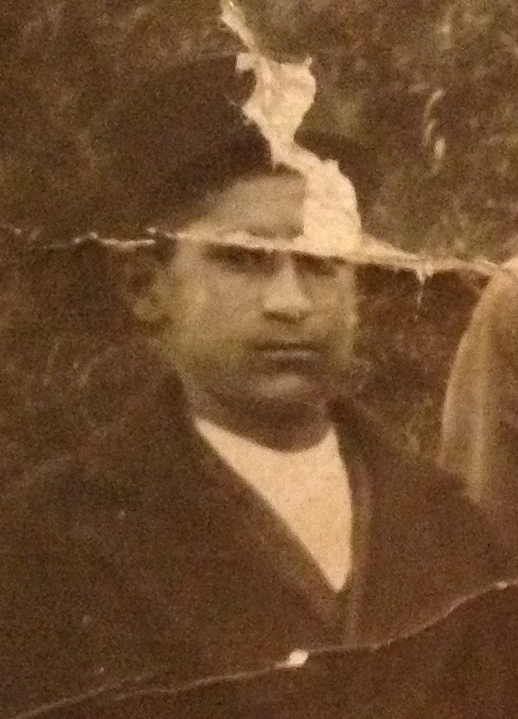
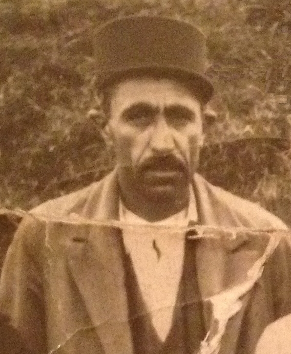
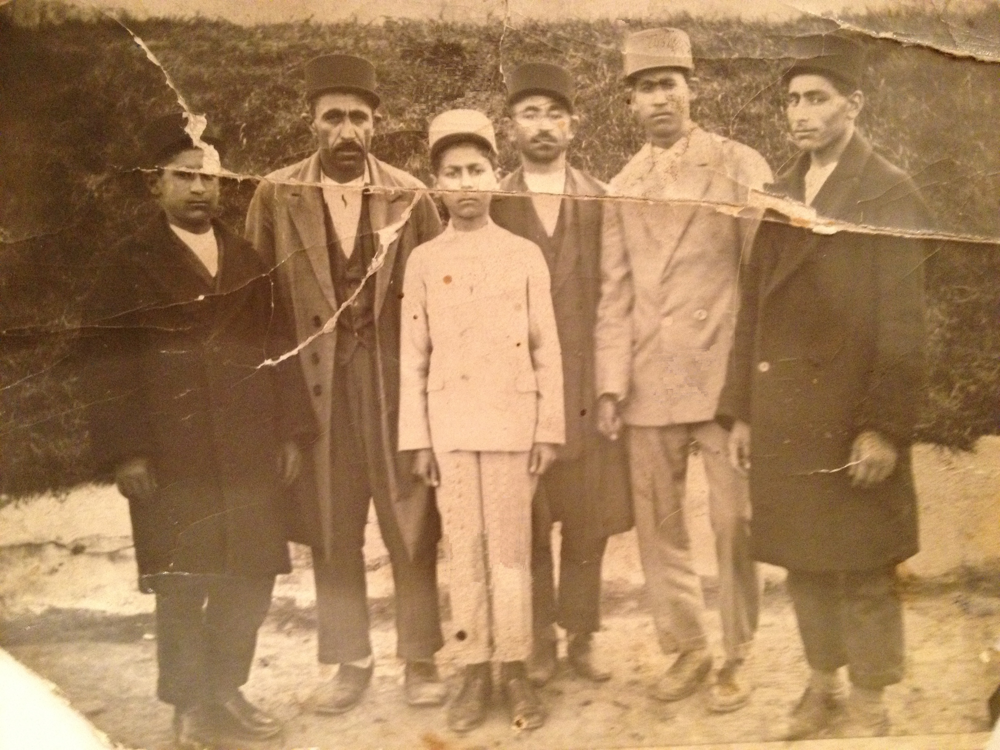
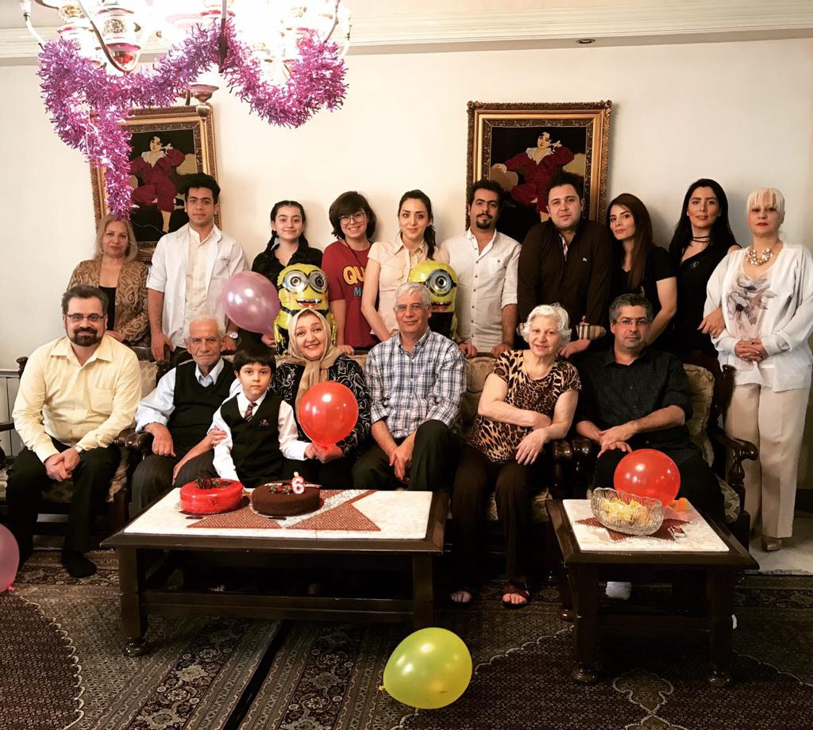
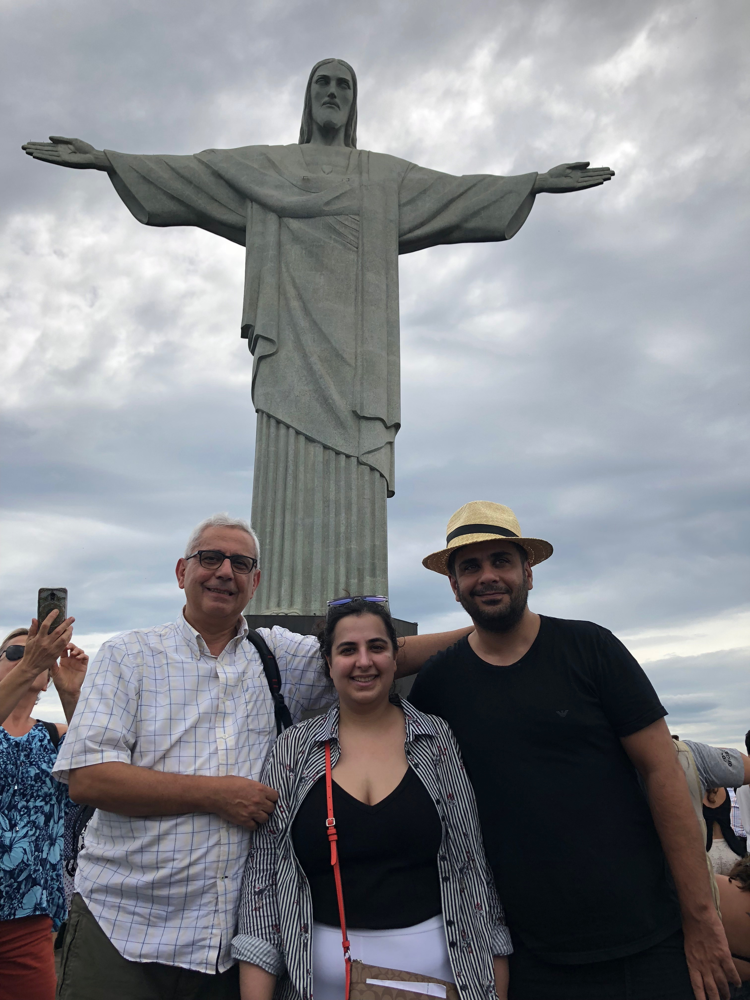
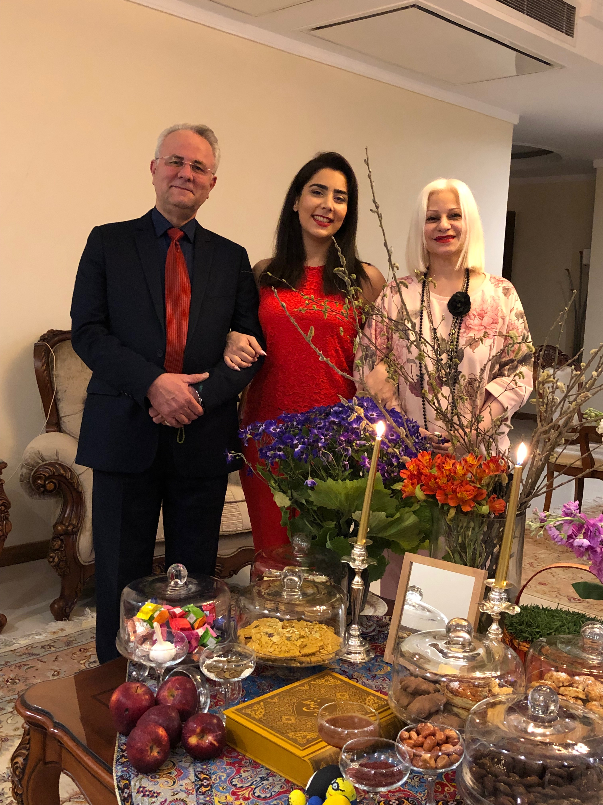
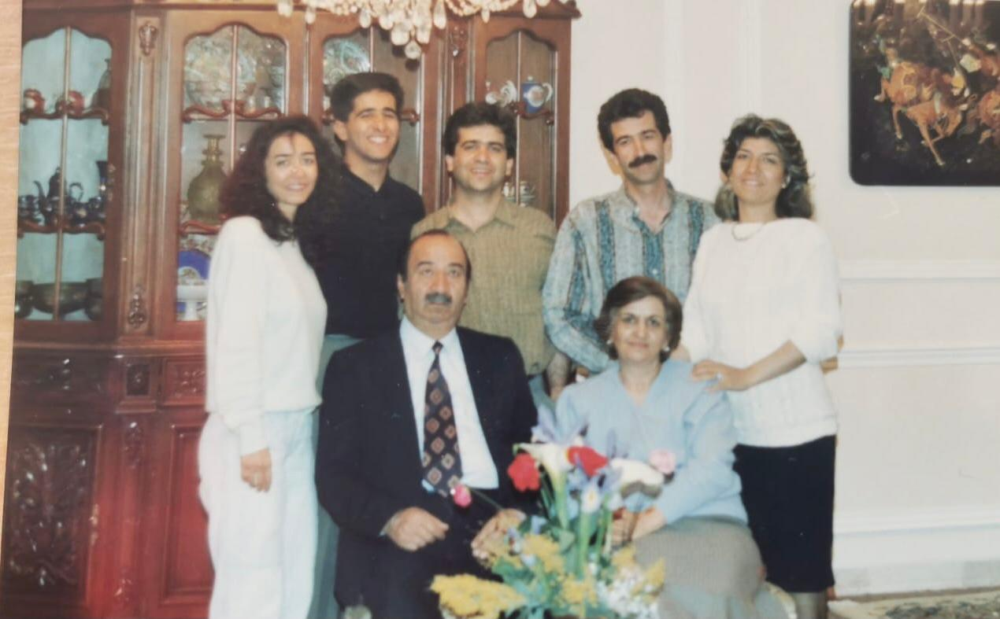
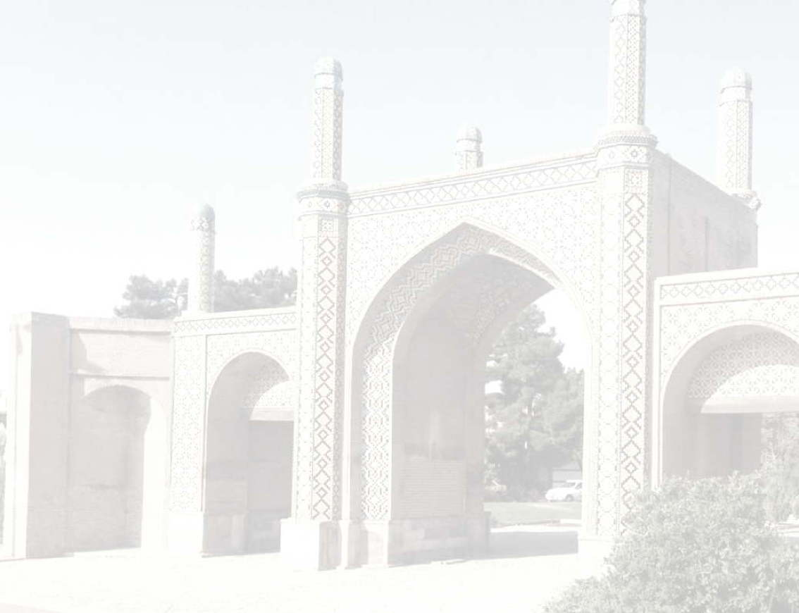

Where relatives married, their children are listed once (under one parent) with a cross-reference at the other, so nobody is counted twice.








Darabi Family Tree WP_V04 Introduction Darabi Family Tree شجره نامه خاندان دارابی و بستگان Family Biography بيوگرافي فاميل Start with First Generations شروع با نسل های اول List of people فهرست اسامی It is a great honnor to bring you the Darabi family tree. This is the first attempt and may probably contain errors. Please inform us of any potentially missing or inaccurate information. We hope that this family tree will be useful and updated by our future Generations. Many thanks to Mrs Nahid Jaberian, Helen Jaberian, Farnoush Darabi, Niloufar Forouzan, Mahin Darabi, Sheida Eftekhari Rad, and Mr Massoud Darabiha and Farzad Hosseinzadeh. March 21, 2013 باعث افتخار است که شجره نامه ی خاندان دارابی و بستگان را تقدیم حضورتان نمائیم . این مجموعه برای اولین بار گرد آوری شده و محتمل است که اشتباهاتی در آن رخ داده باشد. مقتضی است چنانچه اطلاعاتی مستند برای کامل تر شدن این مجموعه دارید ما را یاری فرمائید. امید است بدین وسیله این شجره نامه برای همیشه سرافراز و جاودان بماند و نسل های آینده مان روند تکمیلی ان را ادامه داده و نسل به نسل انتقال دهند با تشکر فراوان از سرکار خانم ناهید جابریان ، سرکار خانم هلن جابریان ، سر کار خانم فرنوش دارابی ، سر کار خانم نیلوفرفروزان، سر کار خانم مهين دارابى، سر کار خانم شيدا افتخارى راد، و جناب آقاى مسعود دارابیها و جناب آقاى فرزاد حسين زاده ١٣٩٢/١/١ C'est un grand honneur de vous offrir cet arbre généalogique de la famille Darabi. Cette première collection comporte probablement des erreurs. Si vous avez des informations qui permettraient de compléter cette collection, nous vous en serions reconnaissants. Nous espérons que cet arbre sera utilisé et maintenu par les générations futures. Avec nos remerciments à Mesdames Nahid Jaberian, Helen Jaberian, Farnoush Darabi, Niloufar Forouzan, Mahin Darabi, Sheida Eftekhari Rad, et à Messieurs Massoud Darabiha et Farzad Hosseinzadeh. 21 Mars 2013 Baese eftekhar ast ke shajarenameye khandane Darabi va bastegan ra taghdim hozouretan namaim. In majmouee baraye avalin bar gerdavari shode va mohtamel ast ke eshtebahati dar an rokh dade bashad. Moghtazi ast chenanche etelaati mostanad baraye kameltar shodane in majmouee daraid ma ra yari farmaid. Omid ast bedin vasile in shajarename baraye hamishe sarafraz va javedan bemand va naslhaye ayandeman ravand takmiliye an ra edame dade va nasl be nasl enteghal dahand. Ba tashakor faravan az sarkar khanom Nahid Jaberian, sarkar khanom Helen Jaberian, sarkar khanom Farnoush Darabi, sarkar khanom Niloufar Forouzan, sarkar khanom Mahin Darabi, sarkar khanom Sheida Eftekhari Rad, va jenabe aghaye Massoud Darabiha va jenabe aghaye Farzad Hosseinzadeh. 1392/1/1 Nasser Darabiha ناصر دارابی ها Mohammad Darabi محمد دارابی
Darabi Family Tree WP_V04 Introduction Introduction Start with First Generations List of people Darabi Family biography بيوگرافي فاميل دارابى Left to right: Abbas Darabi (Generation 5), Hossein Zehtab Darabi (Generation 5), Asadollah Jaberian (Generation 6b1), -?, Ghassem Darabi (Generation 5), -? Picture; approximately 1920 History of Haj Chorok - This text is based on the memories of my father Mr. Ramazan Darabi (Generation 5). My role has been to gather all information and dates. Mohammad Darabi, Generation 6c5 - March 21, 2013 - Biography Haj Chorok our great-grandfather was born around 1710-1720 at the city of Darab, Fars Province, Iran . His family moved to Shiraz, Fars Province, Iran when he was young. ..... . 1- Haj Chorok Any volunteer to translate this biography into English the rest of the text? Please send an email to nasser@darabiha.com با عرض سلام ، با تشكر از آقاى پروفسور ناصر دارابيها كه با علاقه و پشتكار فراوان با اينجانب براي تشكيل شجره نامه همكارى وارائه طريق بسيار زياد داشته وهمچنين ساير فاميل عزيز مانند خانم ناهيد جابريان ، خانم هلن جابريان،خانم مهين دارابى، آقاى مسعود دارابيها، آقاى فرزاد حسين زاده، خانم شيدا افتخارى راد و دوشيزه نيلوفر فروزان كه همگى در اين راه با ما ( محمد وناصر ) همكارى نموده ودر آينده هم ما را يارى خواهند داد ،جهت آشنائى از وضعييت زندگى،اجتمائى و خانوادگى پيشينييان فاميل براى هر كدام مختصرى بشرح زير باطلاع ميرسانم با عنايت باينكه اين مطالب كلا بروايت ازآقاى رمضان دارابى( نسل ٥) بوده ونقش اينجانب فقط تعين تاريخ ، مشخص نمودن سن ها، روايت مطالب ونگارش انها ميباشد. اميد است كه نسل آينده با خواندن اين مطالب و ديدن شجره نامه با نياكان خود آشنا شده وهمبستگى وارتباط خود را با كل اعضاء زنده فاميل حفظ نمايند. ضمنا از تمام فاميل عزيز بويژه خانواده محترم جابريان تقاضا دارم درصورتيكه مطلبى از خانم فاطمه دارابى همسر آقاى حاج رمضان جابريان يا هر يك از سر شاخه ها مى دانند با نام خود در محل مربوطه بنويسند Mohammad Darabi, Generation 6c5 - March 21, 2013 ١- حاج چورُك نسل اول نقل از آقاى محمد دارابی نسل ششم آقاى حاج چورك كه راس هرم فاميل بشمار ميرود تقريبا در سالهاى ١٠٩٠ تا١١٠٠ هجرى شمسى درشهر داراب استان فارس متولد ميگردد .دركودكى همراه خانواده اش به شهر شيراز كوچ مينمايد، باتوجه به توانايى و هوش زيادش توانسته در جوانى به بازرگانى بزرگ وبرجسته تبديل گردد و در شهر شيراز تشكيل خانواده ميدهد، كم كم كارش رونق گرفته وبفكر تجارت در بين شهر ها مى افتد ، در ان زمان كار تجارت بدليل عدم امنيت راهها و عدم وجودارتباطات تجارى والكترونيكى كنونى بسيار مشكل بود وفقط با هوش زياد ونبوق بسيار امكان پذير بود، ايشان هم موفق گرديد با استخدام حدود ١٠٠نفر كارمند ، منشى، نگهبان وسوار كار وخريد قاطر وشترهاى زيادى وهمچنين اعمال مديريت درست از عهده اين كار برايد ، بطوريكه مالاتجاره را تهيه مى كرد وپس از بار زدن به قاطر وشترها بهمراه گروهى سواركار ومحافظ ، بارها رابه قصد شهر تبريز كه وليعهد نشين ومركز تجارت بود حمل مينمود ودر بين راه فقط در شهرهاى بسيار مهم مانند اصفهان ، رى وقزوين توقف چند روزه داشت . در اين شهرها كالاهاى مورد نياز رافروخته وكالاهاى لازم براى تبريز راخريدارى ميكرد ودرنهايت اخرين توقف او شهر تبريزبود كه كل كالاها در آنجا بفروش ميرسيد وبراى برگشت خود نيز بهمان شكل خريد كالاهاى مورد نياز شيراز را تهيه و به شيراز باز مى گشت ، اين رفت وبرگشت حدود نه ماه طول مى كشيد . در يكى از سفرهاى خود در زمستانى بسيار سرد هنگام شب وارد قزوين مى گردد وطبق معمول به كاروانسرايى بزرگ كه هميشه در آنجا اطراق مى كرد مى رسد، درب كاروانسرا بسته بود او چندين بار در زد ولى سرايدار در را باز نكرد، سرايدار كه از سرماى بسيار شديد در زير كرسى پناه گرفته بود از تنبلى حاضر به باز كردن در كاروانسرا نگرديد ،حاج چورك كه مى ديد كاركنانش از سرما از بين مى روند چندين بار فرياد زده ومحكم در را به صدادرآورد ولى سرايدار هرگز در را باز نكرد. او بسيار عصبانى شد وبه كاروانسراى ديگر رفت ودر آنجا اقامت كرد. روز بعد به معاون خود گفت كه قافله را بطرف تبريز حركت داده وكارهاى لازم را انجام دهد ودر برگشت به قزوين، اوهمراه آنها به شيراز خواهد آمد. او به بازار رفت وبه دلالهاى ملك گفت كه آن كاروانسرا را برايش خريدارى كنند حتى اگرمالك تمايلى به فروش نداشته باشد. سرانجام توانست كاروانسرا راخريدارى نمايد ، سپس به كاروانسرا رفت وآن سرايدار رااخراج كرد. سرايدار مذكور چندين بار طلب بخشش كرد ولى او هرگز راضى به بخشش او نگرديد. او چند ماهى در قزوين اقامت داشت تا قافله اش از تبريز بر گردد، در اين چند ماه مدير ، سرايدار ، كارمند براى كاروانسرا استخدام نمود و نام آنجا رانيز سراى حاج چورك ناميد كه اكنون نيز آثار ان در قزوين باقى است . كاروانسراى حاج چورك تا سال ١٣٠٤ به صورت كاروانسرا مورد بهره بردارى قرار داشت ، در اين سال احتمالاً بدستور رضاشاه ملك مذكور مصادره گرديده ودراختيارتعداد زيادى كولى اهل تسنن كه ازمحل زندگى خودشان به قزوين تبعيد گرديده بودند قرار مى گيرد. پس از انقلاب اسلامى ملك مذكور تسطيع گرديده وهم اكنون به صورت پاركينگ مورد استفاده شهردارى قرار دارد. حاج چورك دخترى از قزوين انتخاب كرده واو رابه عقد خود در آورد. براى او خانه وزندگى تهيه نمود. ازآن ببعد هميشه در قزوين اقامت بيشتر داشت و بعضى اوقات هم تا رفت وبرگشت قافله اش نزد همسر جديدش زندگى ميكرد ، از آنها پسرى متولد گرديد كه او راحاج آقا نام نهادند كه نسل ما از او ميباشد . ٢- محمد زهتاب ( دارابى) نسل چهارم نقل از آقاى محمد دارابی نسل ششم بعد از حاج آقا پسرش حاج خليل بود كه متاسفانه هيچگونه اطلاعات درستى از حاج اقا وحاج خليل نداريم ،فرزندحاج خليل محمد نام داشت كه او نسل چهارم شجره نامه ميباشد ، او در سال ١٢٣٥ هجرى شمسى در قزوين متولد گرديد ودر سال ١٣١٨ در گذشت. او در كودكى بسيار فعال و كوشا بود ، از ابتداى نو جوانى به ساخت زه ( از روده گوسفند) رو آورد ،در آن زمان كاربرد زه فقط در كمانهاى حلاجى واحيانا در بعضى مواقع جهت سازهاى زهى بكار مى رفت ،او همواره براى بهتر كردن كار وبالا بردن كيفيت توليداتش آزمايشهايى در زير زمين خود انجام ميداد ، چندين سال آزمايشها راتكرار كرد تا سرانجام با خواباندن تركيبى از تخم مرغ وچند داروى گياهى در محيط واطراف روده گوسفند توانست دوام آنرا افزايش داده واز آن ،زه مورد نظرش را پيدا كند . حالا او بدنبال بازار براى فروش محصولات خود بود،بهترين بازار نيز بازار حلاجهاى شهر ساوه بود ، زيرا ساوه بيشترين وبهترين لحاف را در كشور توليد ميكرد ،لذااو چند زه از محصولات جديد خود را به حسين پسر بزرگش داد وباو گفت در بازار ساوه از هر ده مغازه به يك مغازه يك عدد بطور مجانى بدهد. او نيز چنين كرد ،پس از چند ماه خريداران زه از ساوه وچند شهر ديگر با ايشان مكاتبه كرده وبراى خريد زه علاقه بسيارى نشان دادند. او محصول جديد خود راببازار ارائه داد. كم كم وضعيت مالى خوبى پيدا كرد، از جانب ديگر در آن زمان كه دوران حكومت قاجاريه بود ، وشهر تبريز كه شهر وليعهد نشين بشمار ميرفت مركز تجارى كشور نيز محسوب مى گرديد. در آن شهر توسط يك تاجربزرك ايرانى بنام حاج رضا توبى سرت روده آغاز شد. ايشان كارخانه بزرگى تأسيس كرد،وحدود دويست كارگر ( دختر آلمانى) در محل كارخانه مستقر نمود و از تمام زهتابهاى كشور خواسته بود كه روده را پس از پاك كردن بصورت اورژينال آماده و دراختيار او قرار دهند ، پسران محمد زهتاب نيز با توجه به وضعيت مالى خانواده خود اقدام به تأسيس شركتى نمودند كه سهامداران آن محمد زهتاب وپسرانش حسين، رمضان، قاسم ونوه اش اسدالله بودند. محمد با تأسيس شركت وكارخانه جديد با پشتكار فراوان با فرزندان خود همكارى ميكرد،بدينگونه كه حسين مديريت شركت، رمضان مسئول خريد وپيداكردن بازارهاى فروش، قاسم مسئول كارخانه ، اسدالله حسابدار كارخانه وكشتارگاه ومحمد نيز ناظر به امور كارگران وكنترل موجودى را بعهده داشت . همسر محمد سلمه نام داشت و ازخانواده اى خوب بود، او زنى مهربان ومادرى فداكار بشمار ميرفت، داراى قامتى كشيده وچهره اى زيبا بود، مى گويند سلمه خانم از هنر گريم وآرايش بهره مند بوده ، بطوريكه در بعضى از جشنها و ميهمانيهاى خصوصى نصف صورت خودرابسيار زيبا ونصف ديگر رابا گريم بسيار زشت مى ساخته و در ميهمانى ظاهر مى گرديده. او در ميانسالى بعلت بيمارى در گذشت. پس از چند سال فرزندان محمد براى پدرشان همسر ديگرى انتخاب نمودند ، همسر دوم تا آخرعمر محمد در كنار او بود . محمد زهتاب بسيار خوب ،موئمن وپاك بود ،او درزمان حيات خود پسر بزرگش حسين رااز دست مى دهد، گفته ميشود تا روز قبل از فوت خود در حاليكه سنش افزون بر صد سال بود در كارخانه كار مى كرده وهنگام مرگ تمام فاميل خود را توسط همسرش دعوت مى نمايد ،فرزندان ونوه هايش همگى بخانه اش مى روند، او با همگى خداحافظى كرده وآنها را مى بوسد ،سپس در رختخوابى كه رو بقبله انداخته بود دراز مى كشد ودست پسر بزرگش رمضان را دردست گرفته واز او مى خواهد مواظب تمام فاميل باشد. باو مىگويد يك قبر خريدارى وبا مسجد هم جهت بركذارى ختم صحبت كرده ام ،هزينه هاى كل مراسم را نيز آماده ودر طاقچه اطاق گذاشته ام به هيچ كس بدهى نداشته واز هيچ كسى هم طلبى ندارم ومى خواهم ديگر براى هميشه شماها را ترك كنم ، انگاه مجددا از فاميل خداحافظى كرده وبا لبخند،چشمهاى خود را بسته وپس از خواندن دعا بلا فاصله فوت مى نمايد. فرزندان او كه از نحوه فوت پدرشان متعجب گرديده بودند با تشريفات خاصى او رادر محل تعين شده دفن ومراسم لازم را انجام مى دهند. او محور خانواده بوده و شاخه هاى اصلى خانواده نيز از فرزندان او اغاز مى گردد . سرشاخه ها نقل از آقاى محمد دارابی نسل ششم سر شاخه هاى فاميل كه نقش محورى را تعين مى كنند ، فرزندان محمد زهتاب (دارابى) مى باشند اسامى آنها بترتيب سن عبارتست از حسين، فاطمه، رمضان ، قاسم وعباس ، نفر آخر در نوجوانى فوت مى كند، اينك مختصرى از هر كدام در زير باطلاع مىرسد . ٣- حسين زهتاب ( دارابى) نسل پنجم نقل از آقاى محمد دارابی نسل ششم حسين زهتاب تقريباً درسال ١٢٦١ هجرى شمسى در قزوين متولد گرديد. او مردى باجثه كوچك، وبسيار فرز وزبردست ونيز مهربان ودوستار خانواده ومردم بود. . در گذشته دربين بچه هاى محل رسم بر اين بود كه دائماًباهم دعواهاى محلى داشتند وافرادى ازاين بچه ها كه توانائى رهبرى داشتند را بعنوان رهبر گروه انتخاب مى كردند. او نيز چنين بود وهميشه رهبر وپيش كسوت دوستان قرار داشت، ودردعواها به تنهائى توانائى روبرو شدن باتعداد زيادى از جوانان راداشت وهمه آنها راشكست مى داد. او مهمان نواز بود وهمه اورا بعنوان آدم خير ودست ودلباز مى شناختند، ايشان از همسرش عاتقه خانم داراى سه فرزند بنام هاى غلامرضا، غلامحسين واكرم گرديد، غلامرضا در كودكى بعلت بيمارى فوت كرد و شناسنامه اورا براى غلامحسين اختصاص دادند ودرنتيجه غلامحسين بعداً بعنوان غلامرضا شناخته شد. . زمانى او همراه گروهى از مردم قزوين براى زيارت كربلا به كشور عراق مسافرت نمود، وسيله مسافرت در آن زمان كجاوه، ارابه ويا اسب بود، در نتيجه مسافرت حدود سه الى چهار ماه طول مى كشيد، درآن موقع در ايران مرض طاعون شيوع داشت وكشور عراق نيز اجباراً آن مسافران رابمدت يك ماه تحت قرنطينه قرار داده ودر يك كاروانسرائى محبوس كرد. حسين كه درانتظارهرچه زودتر رسيدن به كربلابود، نمى توانست اين وضع را تحمل نمايد، لذا روزى باتوجه به اينكه ديوار بيرونى قلعه كاملاً به زمين عمود نبوده وحالت شيب داشت، او تصميم گرفت به طريقى از آنجا بگريزد وآجرى را با هر دو دست برداشته وطرف ديگر آنراروى ديوارقرارداده، به اين اميد كه تا پائين سُربخورد، خودرا در حضور همراهان مسافربه پائين پرت مى كند، متأسفانه او از ارتفاع پانزده مترى به زمين پرت شده وبيهوش ميگردد . مسافرانى كه اين صحنه را ديدند همگى فكر كردند كه او فوت كرد. مأموران عراقى نيز او را روى تخته اى انداخته وبردند. پس از چند روز مسافران آزاد شده وبه كربلا رفتند، سه ماه بعد مسافران مذكور برگشته ودر شهر تاكستان مورد استقبال مردم قرار گرفتند، خانواده حسين نيز براى استقبال از او در تاكستان جمع شده بودند، ولى حسين را نديدند وازمسافران شنيدند كه حسين فوت كرده است. آنها نيز مراسم ختم براى او برگذار نموده وهمگى عزادار شدند. پس از چهار ماه شخصى از تاكستان آمد وبه برادران حسين اطلاع داد كه حسين زهتاب در تاكستان منتظر شما است ، آنها كه اين موضوع را باور نداشتند گفتند حسين فوت كرده است. او چوب خيزرانى به آن ها داد وگفت اين چوب را حسين داده ، آنها باتوجه به اينكه چوب خيزران براى زهتاب ها علامتى مخصوصى بود، حرف اوراباوركرده وباعجله به تاكستان رفتند. در تاكستان حسين را زنده مشاهده نمودند، حسين مى گويد كه من سه ماه در بيمارستان بغداد بسترى بوده تاتمام شكستگى هايم بهبود يابدو نمى توانستم به شمااطلاع دهم ، آنگاه آنها بسيار خوشحال شده وجشن بزرگى برپا كردند . عاتقه خانم همسر حسين نيززنى خوب، مسلمان وبسيار مهربان وازخانواده خوبى بود. باتوجه به اينكه درگذشته رسم براين بود كه وقتى عروس به خانه داماد مى رفت، فاميل داماد نام اورا عوض مى كردند، اورا درخانه همسرش گلين خانم نام نهاده بودند . حسين درسال ١٣١٦ در سن پنجاه وپنج سالگى ودرحاليكه هنوز پدرش زنده بود بعلت بيمارى درگذشت. جالب توجه است كه او مدتى با مهدى زهتاب اختلاف شديدى داشت كه سرانجام دختر اورابراى برادرش رمضان گرفت ومدتى نيز با حاج ميرزا آقا مسعودى اختلاف داشت كه عاقبت دختر او نيز همسر قاسم برادر ديگرش گرديد . ٤- فاطمه دارابى نسل پنجم نقل از آقاى محمد دارابی نسل ششم فاطمه خانم تقريباً در سال ١٢٦٨ هجرى شمسى در قزوين متولد گرديد، او بسيار متين، باوقار، وزيباو نيز داراى قامتى بلند بوده است. خانه دارى، بچه دارى خوب وعلاقه مندى به فاميل از محاسن او بشمار مى رفت. همسرش آقاى حاج رمضان جابريان نيز مردى مسلمان، پاكدامن، ساكت وگوشه گير بود، شغل او بارفروشى وامانت فروشى در بازار قزوين بود . فاطمه خانم مانند مادرش ( سلمه) داراى چهار فرزند پسر ويك دختر گرديد، نام آنها، اسداله، سيف اله، فرج اله، عزت اله وكبرى مى باشد.اورا در منزل همسرش ميرزا باجى نامداده بودند. فاطمه خانم در ميان سالى از دنيا رفت وغم بسيار بزرگى رادر دل فرزندان، برادران وهمسر خودبوجود آورد . از فاميل محترم جابريان ويا كسانيكه اطلاعات بيشترى از فاطمه خانم دارند تقاضا ميشود آن اطلاعات را براى آقاى پروفسور ناصر دارابيها ارسال نمايند تا با نام خودشان ثبت گردد. متشكرم . ٥- رمضان دارابى نسل پنجم نقل از آقاى محمد دارابی نسل ششم رمضان دارابى در سال ١٢٧٢ هجرى شمسى در قزوين متولد گرديد، او نيز مانند خواهرش فاطمه خانم قامتى بلند وبدنى ورزيده داشت، هوش زياد وسخنورى از محاسن او بشمار مى رفت، در سن ١٥ سالگى به شاگردى نزد يك تاجر بزرگ ارمنى بنام ميكائيل خان رفت وچندسالى درآنجا فعاليت كرده ورموز كار تجارت را فراگرفت. سپس در سن ١٨ سالگى بعنوان مشاور در خدمت آقاى مهدى زهتاب ( عاريه بند ها) قرار گرفت وچندسالى نيز با او همكارى نموده وكار روده وپوست را از او آموخت. سپس به همكارى با پدر وبرادرانش پرداخت، وچون تجربه زيادى در امور تجارت ومعاملات داشت در شراكتشان امور خريد وفروش رابعهده گرفت. هنگاميكه او نزد مهدى زهتاب بود به دختر او فرخنده دل بسته وعلاقه مند گرديده بود. ولى چون برادر بزرگش حسين با مهدى زهتاب اختلاف شديدى داشت اين موضوع را عنوان نكرده بود. از جانب ديگر پدر وبرادرش دائماً مى خواستند براى او همسر انتخاب نمايند ولى او زير بار نمى رفت، تاروزى حسين وهمسرش وهمسر پدرش او را محاصره كرده وتحت فشار قرار دادندكه چرا او زن نمى گيرد، او كه تحت فشار قرار مى گيرد مى گويد فرخنده را مى خواهد، حسين بلافاصله به همسر ومادرش مى گويد فوراً به منزل مهدى برويد وآشتى كنيد وبعد فرخنده را براى رمضان خواستگارى نمائيد.آنها به منزل مهدى رفته وخانواده اورا راضى كرده كه سرانجام ازدواج آنها صورت گرفت. فرخنده زنى سخت پوش وقوى ونيز مهربان بود، ودرخانه همسرش او را عزيز خانم نام نهاده بودند . آنهاحدود ٥٨ سال باهم زندگى مى نمايند ودر اين مدت داراى نوزده فرزندمى گردند كه متأسفانه هفت نفر از آنها در كودكى بعلت بيمارى فوت مى كنند، وهم اكنون شش پسر وشش دختر بنامهاى: اقدس، اختر، فرنگيس، مهرانگيز ، محمد، مهدى، باقر، اصغر، مهين، منيژه، على وحجت باقيمانده كه درقيد حياتند. رمضان در سن ٩٣ سالگى درسال ١٣٦٥هجرى شمسى بعلت بيمارى سرطان درگذشت. جالب توجه است كه تولد رمضان در ماه رمضان وفوت او نيز درماه رمضان بوده است . ٦-قاسم دارابي نسل پنجم نقل از آقاى محمد دارابی نسل ششم پسر سوم خانواده قاسم نام داشت كه در سال ١٢٨٢ هجرى شمسى در قزوين متولد گرديد. او نيز داراى قامتى بلند واسكلت ورزيده اى بود، هوشيارى وخونسردى از محاسن او بشمار مى رفت وتقريباً از نو جوانى در كارخانه مشغول بكار روده بوده است. در كار روده بسيار مسلط وشايد در زمان خود بالا ترين فرد در كشور محسوب مى گرديد . ايشان در سال ١٣٢٦ همراه خانواده اش به تهران كوچ نمود، ودر آنجا مشغول تجارت گرديد، باتوجه باينكه او فردى مبتكروتوانا وداراى پشتكار زيادى در كارخود بود، توانست به تاجرى موفق تبديل گردد. سپس او اقدام به تأسيس كارخانه نموده و به امور سرُت روده پرداخت وسپس يك كارخانه سالامبور سازى تأسيس كرد و در اين دو كار نيز بسيار موفق ودر بين همكاران خود معروف گرديد . همسر او ربابه مسعودى نام داشت كه دختر حاج ميرزا آقا وبرادران وخواهرانش ابراهيم، اسماعيل، محمود، فاطمه ومعصومه بوده اند، ربابه را در خانه همسرش خانم عزيز نام نهادند. از قاسم وربابه شش پسرو دودختربنامهاى كاظم، اشرف، رضا، محمدتقى، محمدكريم، عفت، محمدرحيم وناصرباقى ماندند (كه متأسفانه محمد كريم كه فردى محترم وبسيار خير بود در ١٣٩١ درگذشت). قاسم در فروردين ١٣٥٨درسن ٧٥سالگى بعلت سكته قلبى فوت مى نمايد .
Darabi Family Tree WP_V04 Introduction مقدمه شروع با نسل های اول فهرست اسامی بيوگرافي فاميل دارابى Family Biography از راست به چپ - _ - قاسم دارابي نسل پنجم - _ - اسدالله جابريان نسل ششم - حسين زهتاب ( دارابى) نسل پنجم - عباس دارابي نسل پنجم عكس حدود سال ١٣٠٠ - بيوگرافي فاميل با عرض سلام ، با تشكر از آقاى پروفسور ناصر دارابيها كه با علاقه و پشتكار فراوان با اينجانب براي تشكيل شجره نامه همكارى وارائه طريق بسيار زياد داشته وهمچنين ساير فاميل عزيز مانند خانم ناهيد جابريان ، خانم هلن جابريان،خانم مهين دارابى، آقاى مسعود دارابيها، آقاى فرزاد حسين زاده، خانم شيدا افتخارى راد و دوشيزه نيلوفر فروزان كه همگى در اين راه با ما ( محمد وناصر ) همكارى نموده ودر آينده هم ما را يارى خواهند داد ،جهت آشنائى از وضعييت زندگى،اجتمائى و خانوادگى پيشينييان فاميل براى هر كدام مختصرى بشرح زير باطلاع ميرسانم با عنايت باينكه اين مطالب كلا بروايت ازآقاى رمضان دارابى( نسل ٥) بوده ونقش اينجانب فقط تعين تاريخ ، مشخص نمودن سن ها، روايت مطالب ونگارش انها ميباشد. اميد است كه نسل آينده با خواندن اين مطالب و ديدن شجره نامه با نياكان خود آشنا شده وهمبستگى وارتباط خود را با كل اعضاء زنده فاميل حفظ نمايند. ضمنا از تمام فاميل عزيز بويژه خانواده محترم جابريان تقاضا دارم درصورتيكه مطلبى از خانم فاطمه دارابى همسر آقاى حاج رمضان جابريان يا هر يك از سر شاخه ها مى دانند با نام خود در محل مربوطه بنويسند محمد دارابى نسل ششم - ١٣٩٢/١/١ ١- حاج چورُك نسل اول نقل از آقاى محمد دارابی نسل ششم آقاى حاج چورك كه راس هرم فاميل بشمار ميرود تقريبا در سالهاى ١٠٩٠ تا ١١٠٠ هجرى شمسى درشهر داراب استان فارس متولد ميگردد .دركودكى همراه خانواده اش به شهر شيراز كوچ مينمايد، باتوجه به توانايى و هوش زيادش توانسته در جوانى به بازرگانى بزرگ وبرجسته تبديل گردد و در شهر شيراز تشكيل خانواده ميدهد، كم كم كارش رونق گرفته وبفكر تجارت در بين شهر ها مى افتد ، در ان زمان كار تجارت بدليل عدم امنيت راهها و عدم وجودارتباطات تجارى والكترونيكى كنونى بسيار مشكل بود وفقط با هوش زياد ونبوق بسيار امكان پذير بود، ايشان هم موفق گرديد با استخدام حدود ١٠٠نفر كارمند ، منشى، نگهبان وسوار كار وخريد قاطر وشترهاى زيادى وهمچنين اعمال مديريت درست از عهده اين كار برايد ، بطوريكه مالاتجاره را تهيه مى كرد وپس از بار زدن به قاطر وشترها بهمراه گروهى سواركار ومحافظ ، بارها رابه قصد شهر تبريز كه وليعهد نشين ومركز تجارت بود حمل مينمود ودر بين راه فقط در شهرهاى بسيار مهم مانند اصفهان ، رى وقزوين توقف چند روزه داشت . در اين شهرها كالاهاى مورد نياز رافروخته وكالاهاى لازم براى تبريز راخريدارى ميكرد ودرنهايت اخرين توقف او شهر تبريزبود كه كل كالاها در آنجا بفروش ميرسيد وبراى برگشت خود نيز بهمان شكل خريد كالاهاى مورد نياز شيراز را تهيه و به شيراز باز مى گشت ، اين رفت وبرگشت حدود نه ماه طول مى كشيد . در يكى از سفرهاى خود در زمستانى بسيار سرد هنگام شب وارد قزوين مى گردد وطبق معمول به كاروانسرايى بزرگ كه هميشه در آنجا اطراق مى كرد مى رسد، درب كاروانسرا بسته بود او چندين بار در زد ولى سرايدار در را باز نكرد، سرايدار كه از سرماى بسيار شديد در زير كرسى پناه گرفته بود از تنبلى حاضر به باز كردن در كاروانسرا نگرديد ،حاج چورك كه مى ديد كاركنانش از سرما از بين مى روند چندين بار فرياد زده ومحكم در را به صدادرآورد ولى سرايدار هرگز در را باز نكرد. او بسيار عصبانى شد وبه كاروانسراى ديگر رفت ودر آنجا اقامت كرد. روز بعد به معاون خود گفت كه قافله را بطرف تبريز حركت داده وكارهاى لازم را انجام دهد ودر برگشت به قزوين، اوهمراه آنها به شيراز خواهد آمد. او به بازار رفت وبه دلالهاى ملك گفت كه آن كاروانسرا را برايش خريدارى كنند حتى اگرمالك تمايلى به فروش نداشته باشد. سرانجام توانست كاروانسرا راخريدارى نمايد ، سپس به كاروانسرا رفت وآن سرايدار رااخراج كرد. سرايدار مذكور چندين بار طلب بخشش كرد ولى او هرگز راضى به بخشش او نگرديد. او چند ماهى در قزوين اقامت داشت تا قافله اش از تبريز بر گردد، در اين چند ماه مدير ، سرايدار ، كارمند براى كاروانسرا استخدام نمود و نام آنجا رانيز سراى حاج چورك ناميد كه اكنون نيز آثار ان در قزوين باقى است . كاروانسراى حاج چورك تا سال ١٣٠٤ به صورت كاروانسرا مورد بهره بردارى قرار داشت ، در اين سال احتمالاً بدستور رضاشاه ملك مذكور مصادره گرديده ودراختيارتعداد زيادى كولى اهل تسنن كه ازمحل زندگى خودشان به قزوين تبعيد گرديده بودند قرار مى گيرد. پس از انقلاب اسلامى ملك مذكور تسطيع گرديده وهم اكنون به صورت پاركينگ مورد استفاده شهردارى قرار دارد. حاج چورك دخترى از قزوين انتخاب كرده واو رابه عقد خود در آورد. براى او خانه وزندگى تهيه نمود. ازآن ببعد هميشه در قزوين اقامت بيشتر داشت و بعضى اوقات هم تا رفت وبرگشت قافله اش نزد همسر جديدش زندگى ميكرد ، از آنها پسرى متولد گرديد كه او راحاج آقا نام نهادند كه نسل ما از او ميباشد . ٢- محمد زهتاب ( دارابى) نسل چهارم نقل از آقاى محمد دارابی نسل ششم بعد از حاج آقا پسرش حاج خليل بود كه متاسفانه هيچگونه اطلاعات درستى از حاج اقا وحاج خليل نداريم ،فرزندحاج خليل محمد نام داشت كه او نسل چهارم شجره نامه ميباشد ، او در سال ١٢٣٥ هجرى شمسى در قزوين متولد گرديد ودر سال ١٣١٨ در گذشت. او در كودكى بسيار فعال و كوشا بود ، از ابتداى نو جوانى به ساخت زه ( از روده گوسفند) رو آورد ،در آن زمان كاربرد زه فقط در كمانهاى حلاجى واحيانا در بعضى مواقع جهت سازهاى زهى بكار مى رفت ،او همواره براى بهتر كردن كار وبالا بردن كيفيت توليداتش آزمايشهايى در زير زمين خود انجام ميداد ، چندين سال آزمايشها راتكرار كرد تا سرانجام با خواباندن تركيبى از تخم مرغ وچند داروى گياهى در محيط واطراف روده گوسفند توانست دوام آنرا افزايش داده واز آن ،زه مورد نظرش را پيدا كند . حالا او بدنبال بازار براى فروش محصولات خود بود، بهترين بازار نيز بازار حلاجهاى شهر ساوه بود ، زيرا ساوه بيشترين وبهترين لحاف را در كشور توليد ميكرد ، لذااو چند زه از محصولات جديد خود را به حسين پسر بزرگش داد وباو گفت در بازار ساوه از هر ده مغازه به يك مغازه يك عدد بطور مجانى بدهد. او نيز چنين كرد ،پس از چند ماه خريداران زه از ساوه وچند شهر ديگر با ايشان مكاتبه كرده وبراى خريد زه علاقه بسيارى نشان دادند. او محصول جديد خود راببازار ارائه داد. كم كم وضعيت مالى خوبى پيدا كرد، از جانب ديگر در آن زمان كه دوران حكومت قاجاريه بود ، وشهر تبريز كه شهر وليعهد نشين بشمار ميرفت مركز تجارى كشور نيز محسوب مى گرديد. در آن شهر توسط يك تاجربزرك ايرانى بنام حاج رضا توبى سرت روده آغاز شد. ايشان كارخانه بزرگى تأسيس كرد،وحدود دويست كارگر ( دختر آلمانى) در محل كارخانه مستقر نمود و از تمام زهتابهاى كشور خواسته بود كه روده را پس از پاك كردن بصورت اورژينال آماده و دراختيار او قرار دهند ، پسران محمد زهتاب نيز با توجه به وضعيت مالى خانواده خود اقدام به تأسيس شركتى نمودند كه سهامداران آن محمد زهتاب وپسرانش حسين، رمضان، قاسم ونوه اش اسدالله بودند. محمد با تأسيس شركت وكارخانه جديد با پشتكار فراوان با فرزندان خود همكارى ميكرد، بدينگونه كه حسين مديريت شركت، رمضان مسئول خريد وپيداكردن بازارهاى فروش، قاسم مسئول كارخانه ، اسدالله حسابدار كارخانه وكشتارگاه ومحمد نيز ناظر به امور كارگران وكنترل موجودى را بعهده داشت . همسر محمد سلمه نام داشت و ازخانواده اى خوب بود، او زنى مهربان ومادرى فداكار بشمار ميرفت، داراى قامتى كشيده وچهره اى زيبا بود، مى گويند سلمه خانم از هنر گريم وآرايش بهره مند بوده ، بطوريكه در بعضى از جشنها و ميهمانيهاى خصوصى نصف صورت خودرابسيار زيبا ونصف ديگر رابا گريم بسيار زشت مى ساخته و در ميهمانى ظاهر مى گرديده. او در ميانسالى بعلت بيمارى در گذشت. پس از چند سال فرزندان محمد براى پدرشان همسر ديگرى انتخاب نمودند ، همسر دوم تا آخرعمر محمد در كنار او بود . محمد زهتاب بسيار خوب ،موئمن وپاك بود ،او درزمان حيات خود پسر بزرگش حسين رااز دست مى دهد، گفته ميشود تا روز قبل از فوت خود در حاليكه سنش افزون بر صد سال بود در كارخانه كار مى كرده وهنگام مرگ تمام فاميل خود را توسط همسرش دعوت مى نمايد ،فرزندان ونوه هايش همگى بخانه اش مى روند، او با همگى خداحافظى كرده وآنها را مى بوسد ،سپس در رختخوابى كه رو بقبله انداخته بود دراز مى كشد ودست پسر بزرگش رمضان را دردست گرفته واز او مى خواهد مواظب تمام فاميل باشد. باو مىگويد يك قبر خريدارى وبا مسجد هم جهت بركذارى ختم صحبت كرده ام ،هزينه هاى كل مراسم را نيز آماده ودر طاقچه اطاق گذاشته ام به هيچ كس بدهى نداشته واز هيچ كسى هم طلبى ندارم ومى خواهم ديگر براى هميشه شماها را ترك كنم ، انگاه مجددا از فاميل خداحافظى كرده وبا لبخند،چشمهاى خود را بسته وپس از خواندن دعا بلا فاصله فوت مى نمايد. فرزندان او كه از نحوه فوت پدرشان متعجب گرديده بودند با تشريفات خاصى او رادر محل تعين شده دفن ومراسم لازم را انجام مى دهند. او محور خانواده بوده و شاخه هاى اصلى خانواده نيز از فرزندان او اغاز مى گردد . سرشاخه ها نقل از آقاى محمد دارابی نسل ششم سر شاخه هاى فاميل كه نقش محورى را تعين مى كنند ، فرزندان محمد زهتاب (دارابى) مى باشند اسامى آنها بترتيب سن عبارتست از حسين، فاطمه، رمضان ، قاسم وعباس ، نفر آخر در نوجوانى فوت مى كند، اينك مختصرى از هر كدام در زير باطلاع مىرسد . ٣- حسين زهتاب ( دارابى) نسل پنجم نقل از آقاى محمد دارابی نسل ششم حسين زهتاب تقريباً درسال ١٢٦١ هجرى شمسى در قزوين متولد گرديد. او مردى باجثه كوچك، وبسيار فرز وزبردست ونيز مهربان ودوستار خانواده ومردم بود. . در گذشته دربين بچه هاى محل رسم بر اين بود كه دائماًباهم دعواهاى محلى داشتند وافرادى ازاين بچه ها كه توانائى رهبرى داشتند را بعنوان رهبر گروه انتخاب مى كردند. او نيز چنين بود وهميشه رهبر وپيش كسوت دوستان قرار داشت، ودردعواها به تنهائى توانائى روبرو شدن باتعداد زيادى از جوانان راداشت وهمه آنها راشكست مى داد. او مهمان نواز بود وهمه اورا بعنوان آدم خير ودست ودلباز مى شناختند، ايشان از همسرش عاتقه خانم داراى سه فرزند بنام هاى غلامرضا، غلامحسين واكرم گرديد، غلامرضا در كودكى بعلت بيمارى فوت كرد و شناسنامه اورا براى غلامحسين اختصاص دادند ودرنتيجه غلامحسين بعداً بعنوان غلامرضا شناخته شد. . زمانى او همراه گروهى از مردم قزوين براى زيارت كربلا به كشور عراق مسافرت نمود، وسيله مسافرت در آن زمان كجاوه، ارابه ويا اسب بود، در نتيجه مسافرت حدود سه الى چهار ماه طول مى كشيد، درآن موقع در ايران مرض طاعون شيوع داشت وكشور عراق نيز اجباراً آن مسافران رابمدت يك ماه تحت قرنطينه قرار داده ودر يك كاروانسرائى محبوس كرد. حسين كه درانتظارهرچه زودتر رسيدن به كربلابود، نمى توانست اين وضع را تحمل نمايد، لذا روزى باتوجه به اينكه ديوار بيرونى قلعه كاملاً به زمين عمود نبوده وحالت شيب داشت، او تصميم گرفت به طريقى از آنجا بگريزد وآجرى را با هر دو دست برداشته وطرف ديگر آنراروى ديوارقرارداده، به اين اميد كه تا پائين سُربخورد، خودرا در حضور همراهان مسافربه پائين پرت مى كند، متأسفانه او از ارتفاع پانزده مترى به زمين پرت شده وبيهوش ميگردد . مسافرانى كه اين صحنه را ديدند همگى فكر كردند كه او فوت كرد. مأموران عراقى نيز او را روى تخته اى انداخته وبردند. پس از چند روز مسافران آزاد شده وبه كربلا رفتند، سه ماه بعد مسافران مذكور برگشته ودر شهر تاكستان مورد استقبال مردم قرار گرفتند، خانواده حسين نيز براى استقبال از او در تاكستان جمع شده بودند، ولى حسين را نديدند وازمسافران شنيدند كه حسين فوت كرده است. آنها نيز مراسم ختم براى او برگذار نموده وهمگى عزادار شدند. پس از چهار ماه شخصى از تاكستان آمد وبه برادران حسين اطلاع داد كه حسين زهتاب در تاكستان منتظر شما است ، آنها كه اين موضوع را باور نداشتند گفتند حسين فوت كرده است. او چوب خيزرانى به آن ها داد وگفت اين چوب را حسين داده ، آنها باتوجه به اينكه چوب خيزران براى زهتاب ها علامتى مخصوصى بود، حرف اوراباوركرده وباعجله به تاكستان رفتند. در تاكستان حسين را زنده مشاهده نمودند، حسين مى گويد كه من سه ماه در بيمارستان بغداد بسترى بوده تاتمام شكستگى هايم بهبود يابدو نمى توانستم به شمااطلاع دهم ، آنگاه آنها بسيار خوشحال شده وجشن بزرگى برپا كردند . عاتقه خانم همسر حسين نيززنى خوب، مسلمان وبسيار مهربان وازخانواده خوبى بود. باتوجه به اينكه درگذشته رسم براين بود كه وقتى عروس به خانه داماد مى رفت، فاميل داماد نام اورا عوض مى كردند، اورا درخانه همسرش گلين خانم نام نهاده بودند . حسين درسال ١٣١٦ در سن پنجاه وپنج سالگى ودرحاليكه هنوز پدرش زنده بود بعلت بيمارى درگذشت. جالب توجه است كه او مدتى با مهدى زهتاب اختلاف شديدى داشت كه سرانجام دختر اورابراى برادرش رمضان گرفت ومدتى نيز با حاج ميرزا آقا مسعودى اختلاف داشت كه عاقبت دختر او نيز همسر قاسم برادر ديگرش گرديد . ٤- فاطمه دارابى نسل پنجم نقل از آقاى محمد دارابی نسل ششم فاطمه خانم تقريباً در سال ١٢٦٨ هجرى شمسى در قزوين متولد گرديد، او بسيار متين، باوقار، وزيباو نيز داراى قامتى بلند بوده است. خانه دارى، بچه دارى خوب وعلاقه مندى به فاميل از محاسن او بشمار مى رفت. همسرش آقاى حاج رمضان جابريان نيز مردى مسلمان، پاكدامن، ساكت وگوشه گير بود، شغل او بارفروشى وامانت فروشى در بازار قزوين بود . فاطمه خانم مانند مادرش ( سلمه) داراى چهار فرزند پسر ويك دختر گرديد، نام آنها، اسداله، سيف اله، فرج اله، عزت اله وكبرى مى باشد.اورا در منزل همسرش ميرزا باجى نامداده بودند. فاطمه خانم در ميان سالى از دنيا رفت وغم بسيار بزرگى رادر دل فرزندان، برادران وهمسر خودبوجود آورد . از فاميل محترم جابريان ويا كسانيكه اطلاعات بيشترى از فاطمه خانم دارند تقاضا ميشود آن اطلاعات را براى آقاى پروفسور ناصر دارابيها ارسال نمايند تا با نام خودشان ثبت گردد. متشكرم . ٥- رمضان دارابى نسل پنجم نقل از آقاى محمد دارابی نسل ششم رمضان دارابى در سال ١٢٧٢ هجرى شمسى در قزوين متولد گرديد، او نيز مانند خواهرش فاطمه خانم قامتى بلند وبدنى ورزيده داشت، هوش زياد وسخنورى از محاسن او بشمار مى رفت، در سن ١٥ سالگى به شاگردى نزد يك تاجر بزرگ ارمنى بنام ميكائيل خان رفت وچندسالى درآنجا فعاليت كرده ورموز كار تجارت را فراگرفت. سپس در سن ١٨ سالگى بعنوان مشاور در خدمت آقاى مهدى زهتاب ( عاريه بند ها) قرار گرفت وچندسالى نيز با او همكارى نموده وكار روده وپوست را از او آموخت. سپس به همكارى با پدر وبرادرانش پرداخت، وچون تجربه زيادى در امور تجارت ومعاملات داشت در شراكتشان امور خريد وفروش رابعهده گرفت. هنگاميكه او نزد مهدى زهتاب بود به دختر او فرخنده دل بسته وعلاقه مند گرديده بود. ولى چون برادر بزرگش حسين با مهدى زهتاب اختلاف شديدى داشت اين موضوع را عنوان نكرده بود. از جانب ديگر پدر وبرادرش دائماً مى خواستند براى او همسر انتخاب نمايند ولى او زير بار نمى رفت، تاروزى حسين وهمسرش وهمسر پدرش او را محاصره كرده وتحت فشار قرار دادندكه چرا او زن نمى گيرد، او كه تحت فشار قرار مى گيرد مى گويد فرخنده را مى خواهد، حسين بلافاصله به همسر ومادرش مى گويد فوراً به منزل مهدى برويد وآشتى كنيد وبعد فرخنده را براى رمضان خواستگارى نمائيد.آنها به منزل مهدى رفته وخانواده اورا راضى كرده كه سرانجام ازدواج آنها صورت گرفت. فرخنده زنى سخت پوش وقوى ونيز مهربان بود، ودرخانه همسرش او را عزيز خانم نام نهاده بودند . آنهاحدود ٥٨ سال باهم زندگى مى نمايند ودر اين مدت داراى نوزده فرزندمى گردند كه متأسفانه هفت نفر از آنها در كودكى بعلت بيمارى فوت مى كنند، وهم اكنون شش پسر وشش دختر بنامهاى: اقدس، اختر، فرنگيس، مهرانگيز ، محمد، مهدى، باقر، اصغر، مهين، منيژه، على وحجت باقيمانده كه درقيد حياتند. رمضان در سن ٩٣ سالگى درسال ١٣٦٥هجرى شمسى بعلت بيمارى سرطان درگذشت. جالب توجه است كه تولد رمضان در ماه رمضان وفوت او نيز درماه رمضان بوده است . ٦-قاسم دارابي نسل پنجم نقل از آقاى محمد دارابی نسل ششم پسر سوم خانواده قاسم نام داشت كه در سال ١٢٨٢ هجرى شمسى در قزوين متولد گرديد. او نيز داراى قامتى بلند واسكلت ورزيده اى بود، هوشيارى وخونسردى از محاسن او بشمار مى رفت وتقريباً از نو جوانى در كارخانه مشغول بكار روده بوده است. در كار روده بسيار مسلط وشايد در زمان خود بالا ترين فرد در كشور محسوب مى گرديد . ايشان در سال ١٣٢٦ همراه خانواده اش به تهران كوچ نمود، ودر آنجا مشغول تجارت گرديد، باتوجه باينكه او فردى مبتكروتوانا وداراى پشتكار زيادى در كارخود بود، توانست به تاجرى موفق تبديل گردد. سپس او اقدام به تأسيس كارخانه نموده و به امور سرُت روده پرداخت وسپس يك كارخانه سالامبور سازى تأسيس كرد و در اين دو كار نيز بسيار موفق ودر بين همكاران خود معروف گرديد . همسر او ربابه مسعودى نام داشت كه دختر حاج ميرزا آقا وبرادران وخواهرانش ابراهيم، اسماعيل، محمود، فاطمه ومعصومه بوده اند، ربابه را در خانه همسرش خانم عزيز نام نهادند. از قاسم وربابه شش پسرو دودختربنامهاى كاظم، اشرف، رضا، محمدتقى، محمدكريم، عفت، محمدرحيم وناصرباقى ماندند (كه متأسفانه محمد كريم كه فردى محترم وبسيار خير بود در ١٣٩١ درگذشت). قاسم در فروردين ١٣٥٨درسن ٧٥سالگى بعلت سكته قلبى فوت مى نمايد .
ازدواج تاريخى تقريباً در سالهاى ١٣٠٦ تا ١٣٠٨هجرى شمسى بود، شراكت محمد زهتاب، حسين، رمضان، قاسم دارابى واسداله جابريان ادامه داشت، مديريت شركت كم كم بدست رمضان دارابى سپرده شده بود، در اين موقع يكى از تجار قزوين كه بسيار محترم واز خانواده خوبى بود مشكل مالى پيدا كرده، كه در نتيجه بيشتر اموال خود را فروخته ومشكلات مالى را برطرف ساخت، ولى ديگر سرمايه اى براى ادامه كار نداشت، رمضان دارابى كه از وضعيت او با خبر شده بود از او دعوت كرد كه در شركت آنها مشغول فعاليت گردد، او نيز قبول كرد ودر شركت بعنوان ميرزا(حسابدار) مشغول بكار شد. ضمناً رمضان دارابى باو گفته بود كه انشاءاله هر وقت خواستيم براى قاسم زن بگيريم دختر شمارا خواهيم گرفت. او نيز از اين وعده بسيار خوشحال شده بود.در آن موقع حسين دارابى درگيرى واختلاف شديدى با حاج ميرزاآقامسعودى رئيس صنف قصاب داشت، اين درگيرى مدت زيادى بطول انجاميده بود.( البته رمضان وقاسم از اين درگيرى خسته شده وخواهان خاتمه آن بودند. ) روزى شخصى نزد رمضان رفته ومى گويد كه شما دوخانواده چقدر باهم در گير مى شويد، هر دو خانواده خوب وهردو آدمهاى فهميده، چرا باهم آشتى ورفاقت نمى كنيد؟ رمضان مى گويد من هم خسته شده ام ولى برادر ما كوتاه نمى آيد.آن مرد مى گويد براى شروع مى توانيد دختر حاج ميرزاآقا را براى قاسم بگيريد، رمضان مى گويد مگر حاج ميرزاآقا دختر دارد؟ او مى گويد بله، چند تا. رمضان بلا فاصله نزد همسرخود، همسر حسين وخواهرش فاطمه مى رود وبه آنها مى گويد فوراً شيرينى خريده وبه خانه حاج ميرزاآقا برويد وضمن آشتى كردن، دختر او را براى قاسم خواستگارى نمائيد. آنها هم كله قند وشيرينى خريده وبه منزل حاج ميرزاآقا مى روند. خانواده حاج ميرزاآقا هم از آنها استقبال وپذيرائى خوبى مى كنند، وبه خواستكارى آنها نيز پاسخ مثبت مى دهند. سر انجام دو خانواده كه سالها اختلاف شديد داشتند بخاطر اين ازدواج باهم رابطه خوبى پيدا كردند. رمضان دارابى زمان ازدواج راتعين وكارت دعوت آنرا نيز خريدارى نمود. او فراموش كرده بود كه قبلاً به منشى خود قولى براى دخترش داده بود. كارت ها را روى ميز ميرزا گذاشت، آن تاجر سابق وقتى كارتهارا ديد سئوال كرد اينها چى هستند؟ رمضان گفت دختر حاج ميرزاآقا را براى قاسم گرفته ايم، ناگهان آن مرد بيحال شد وبه زمين افتاد، چند نفر او را بلند كرده وپس از اينكه حالش را جا آوردند، رمضان پرسيد كه چى شد؟ او در حاليكه حالت افسرده اى داشت گفت شما كه قول داديد دختر مرا براى قاسم بگيريد! رمضان از وضعيت پيش آمده بسيار ناراحت شده واز اينكه دل آن پير مرد راشكسته از كار خود سخت عصبانى گرديد، وپس از چند دقيقه تفكر، مى گويد ناراحت نشويد دختر شمارا براى اسداله خواهرزاده ام مى گيرم، آنها كه با هم فرقى ندارند، آن مرد خوشحال شده وبلافاصله به خانواده اش اطلاع مى دهد. اسداله جابريان كه در كارخانه مشغول كار بود در آن زمان نوجوانى بيش نبود، وقتى از كارخانه برگشت به او مى گويندكه دو شب ديگر عروسى تو خواهد بود. او در حاليكه شوكه شده بودبه مادر وپدر خود اطلاع داده وآنها هم موافقت مى نمايند. لذا دريك شب دو ازدواج قاسم دارابى واسداله جابريان با همسرانشان انجام مى شود. رمضان دارابى كه به هر دو داماد ( برادر وخواهرزاده اش) علاقه زيادى داشت مى خواست جشن بزرگى برپا نمايد ولى در همسايگى آنها مرد روحانى بزرگى بنام حاجى مجتحد( شهيدى) زندگى مى كردكه با خانواده آنها نيز ارتباط ورفت آمد داشت وچون آن مردروحانى صداى موزيك را حرام مى دانست رمضان اجباراً احترام گذاشته واز چند نفر كه ويلن وتار مى زدند دعوت نمودوبه آنها سفارش كرد كه آهسته بنوازند. مجلس عروسى آغاز ومهمانان در حياط خانه مورد پذيرائى قرار گرفتند، ناگهان يكى از خدمتكاران نزد رمضان رفته ومى گويد كه حاجى مجتحد در كوچه سروصداكرده است. رمضان دارابى به كوچه رفته ومى بيند كه حاج آقا با عصبانيت قدم زده وبه آنها فحاشى مى كند، تعداد زيادى از مردم وهمسايه ها كه دعوت نداشتند نيز در اطراف حاج آقا ايستاده وتماشا ميكنند، او نزد حاج آقا رفته وبا احترام سلام كرده ومى گويد حاج آقا چى شده؟ حاج آقا مجدداً فحاشى كرده ومى گويد مطرب آورده ايد؟ او مى گويد بله ولى سفارش كرده ام آهسته بزنند كه مزاحم شما نشوند، حاج آقا مى گويد همين الان آنهارا بيرون كن. رمضان مى گويد، حاج آقا مهمان زياد داريم والان خوب نيست آنها را بيرون كنم لطفاً شما كوتاه بيائيدوبگذاريد اين مردم به خانه هايشان بروند. حاج آقا مجدداً فحش هاى ركيك مى دهد كه ناگهان رمضان عصبانى شده ومى گويد حاج آقا چهارديوارى، اختيارى به شما چه مربوط است شما اگرراست مى گوئيد جلو برادرانتان را بگيريد كه به خانه هاى فساد نروند. حاج آقا مى گويد دروغ مى گوئى! رمضان مى گويد همين الان آنها در آنجا هستند. او ميگويد بايد ثابت كنى! رمضان پاسخ مى دهدباشد، سپس او به نوكر خود مى گويد درويش فوراً با رمضان برو واگر نتوانست ثابت كند من امشب عروسى را بهم مى زنم. رمضان با درويش با درشگه شخصى حاج آقا به محله بد نام قزوين رفته ودر جلوى يكى از خانه ها توقف مى كنند. رمضان مى گويد درويش با من به داخل مى آئى يانه درويش مى گويد نه شما برو داخل. رمضان به داخل رفته ودر اطاقى در طبقه دوم كه پنجره اى نيز به كوچه داشت، برادران حاج آقارا مى بيند كه همگى در كنار زنان روسپى نشسته ومشغول خوردن مشروب مى باشند. سلام كرده ومى گويد من شما را به عروسى دعوت كردم چرا نيامديد. آنها گفتند حاج آقا آنجاست ما نمى توانيم بيائيم. رمضان مى گويد چراعمامه ها را در كنار سفره مشروب گذاشته ايد لااقل حرمت آنها را نگهداريد، سپس عمامه هاى آنها جمع كرده ودر يك دستمال ابريشمى بزرگ گذاشته ودستمال را روى طاقچه قرار مى دهد، سپس چند دقيقه نشسته ويك استكان مشروب با آنها خورده وخدا حافظى كرده وموقع خروج يواشكى دستمال عمامه ها رابرداشته وبه پائين مى رود. درويش كه صداى برادران حاج آقا را از پنجره اطاق شنيده بود وحالا هم عمامه هاى آنها را مى بيندمى گويد عمامه هارا نياور. رمضان گفت بايستى غير حاج آقا مردم محل هم بفهمند وبايد حاج آقا خجالت بكشد وديگر مزاحم همسايه ها نشود. آنگاه به جلوى خانه حاج آقا مى رسند، حاج أقا كه همچنان در كوچه قدم زده وفحاشى مى كرد. از درويش سئوال كرد ثابت شد كه او دروغ مى گويد، رمضان پاسخ مى دهد اينهم عمامه هايشان ودرويش نيز حرف اورا تائيد مى نمايد. حاج آقا از خجالت فوراً بداخل خانه اش رفت. رمضان به يكى از دوستان مى گويد اين عمامه ها را ببر فلان جا ودر طاقچه آن اطاق قرار بده بطورى كه آنها متوجه نشوند. سپس شخصى رابدنبال نوازنده شيپور سربازى فرستاد وچند نفر شيپورزن دعوت كرد وتمام مردم تماشاگر كوچه را نيز به عروسى دعوت كرده وبه همه مى گويد تا صبح با صداى بلند شيپوركه مى زنند شما هم شادمانى كنيد. آن شب براى اهل محل شب فراموش نشدنى بوده وحاجى مجتهدنيز از آن ببعد بى سرو صدا به خانه خود مى رفت وديگر مزاحم همسايه ها نمى شد.
حسين زهتاب (دارابى) نسل ٥ حسين زهتاب تقريباً درسال ١٢٦١ هجرى شمسى در قزوين متولد گرديد. او مردى باجثه كوچك، وبسيار فرز وزبردست ونيز مهربان ودوستار خانواده ومردم بود. در گذشته دربين بچه هاى محل رسم بر اين بود كه دائماًباهم دعواهاى محلى داشتند وافرادى ازاين بچه ها كه توانائى رهبرى داشتند را بعنوان رهبر گروه انتخاب مى كردند. او نيز چنين بود وهميشه رهبر وپيش كسوت دوستان قرار داشت، ودردعواها به تنهائى توانائى روبرو شدن باتعداد زيادى از جوانان راداشت وهمه آنها راشكست مى داد. او مهمان نواز بود وهمه اورا بعنوان آدم خير ودست ودلباز مى شناختند، ايشان از همسرش عاتقه خانم داراى سه فرزند بنام هاى غلامرضا، غلامحسين واكرم گرديد، غلامرضا در كودكى بعلت بيمارى فوت كرد و شناسنامه اورا براى غلامحسين اختصاص دادند ودرنتيجه غلامحسين بعداً بعنوان غلامرضا شناخته شد. زمانى او همراه گروهى از مردم قزوين براى زيارت كربلا به كشور عراق مسافرت نمود، وسيله مسافرت در آن زمان كجاوه، ارابه ويا اسب بود، در نتيجه مسافرت حدود سه الى چهار ماه طول مى كشيد، درآن موقع در ايران مرض طاعون شيوع داشت وكشور عراق نيز اجباراً آن مسافران رابمدت يك ماه تحت قرنطينه قرار داده ودر يك كاروانسرائى محبوس كرد. حسين كه درانتظارهرچه زودتر رسيدن به كربلابود، نمى توانست اين وضع را تحمل نمايد، لذا روزى باتوجه به اينكه ديوار بيرونى قلعه كاملاً به زمين عمود نبوده وحالت شيب داشت، او تصميم گرفت به طريقى از آنجا بگريزد وآجرى را با هر دو دست برداشته وطرف ديگر آنراروى ديوارقرارداده، به اين اميد كه تا پائين سُربخورد، خودرا در حضور همراهان مسافربه پائين پرت مى كند، متأسفانه او از ارتفاع پانزده مترى به زمين پرت شده وبيهوش ميگردد. مسافرانى كه اين صحنه را ديدند همگى فكر كردند كه او فوت كرد. مأموران عراقى نيز او را روى تخته اى انداخته وبردند. پس از چند روز مسافران آزاد شده وبه كربلا رفتند، سه ماه بعد مسافران مذكور برگشته ودر شهر تاكستان مورد استقبال مردم قرار گرفتند، خانواده حسين نيز براى استقبال از او در تاكستان جمع شده بودند، ولى حسين را نديدند وازمسافران شنيدند كه حسين فوت كرده است. آنها نيز مراسم ختم براى او برگذار نموده وهمگى عزادار شدند. پس از چهار ماه شخصى از تاكستان آمد وبه برادران حسين اطلاع داد كه حسين زهتاب در تاكستان منتظر شما است ، آنها كه اين موضوع را باور نداشتند گفتند حسين فوت كرده است. او چوب خيزرانى به آن ها داد وگفت اين چوب را حسين داده ، آنها باتوجه به اينكه چوب خيزران براى زهتاب ها علامتى مخصوصى بود، حرف اوراباوركرده وباعجله به تاكستان رفتند. در تاكستان حسين را زنده مشاهده نمودند، حسين مى گويد كه من سه ماه در بيمارستان بغداد بسترى بوده تاتمام شكستگى هايم بهبود يابدو نمى توانستم به شمااطلاع دهم ، آنگاه آنها بسيار خوشحال شده وجشن بزرگى برپا كردند. عاتقه خانم همسر حسين نيززنى خوب، مسلمان وبسيار مهربان وازخانواده خوبى بود. باتوجه به اينكه درگذشته رسم براين بود كه وقتى عروس به خانه داماد مى رفت، فاميل داماد نام اورا عوض مى كردند، اورا درخانه همسرش گلين خانم نام نهاده بودند. حسين درسال ١٣١٦ در سن پنجاه وپنج سالگى ودرحاليكه هنوز پدرش زنده بود بعلت بيمارى درگذشت. جالب توجه است كه او مدتى با مهدى زهتاب اختلاف شديدى داشت كه سرانجام دختر اورابراى برادرش رمضان گرفت ومدتى نيز با حاج ميرزا آقا مسعودى اختلاف داشت كه عاقبت دختر او نيز همسر قاسم برادر ديگرش گرديد.
رمضان دارابى ( نسل پنجم ) رمضان داراى در سال ١٢٧٢ هجرى شمسى در قزوين متولد گرديد، او نيز مانند خواهرش فاطمه خانم قامتى بلند وبدنى ورزيده داشت، هوش زياد وسخنورى از محاسن او بشمار مى رفت، در سن ١٥ سالگى به شاگردى نزد يك تاجر بزرگ ارمنى بنام ميكائيل خان رفت وچندسالى درآنجا فعاليت كرده ورموز كار تجارت را فراگرفت. سپس در سن ١٨ سالگى بعنوان مشاور در خدمت آقاى مهدى زهتاب ( عاريه بند ها) قرار گرفت وچندسالى نيز با او همكارى نموده وكار روده وپوست را از او آموخت. سپس به همكارى با پدر وبرادرانش پرداخت، وچون تجربه زيادى در امور تجارت ومعاملات داشت در شراكتشان امور خريد وفروش رابعهده گرفت. هنگاميكه او نزد مهدى زهتاب بود به دختر او فرخنده دل بسته وعلاقه مند گرديده بود. ولى چون برادر بزرگش حسين با مهدى زهتاب اختلاف شديدى داشت اين موضوع را عنوان نكرده بود. از جانب ديگر پدر وبرادرش دائماً مى خواستند براى او همسر انتخاب نمايند ولى او زير بار نمى رفت، تاروزى حسين وهمسرش وهمسر پدرش او را محاصره كرده وتحت فشار قرار دادندكه چرا او زن نمى گيرد، او كه تحت فشار قرار مى گيرد مى گويد فرخنده را مى خواهد، حسين بلافاصله به همسر ومادرش مى گويد فوراً به منزل مهدى برويد وآشتى كنيد وبعد فرخنده را براى رمضان خواستگارى نمائيد. آنها به منزل مهدى رفته وخانواده اورا راضى كرده كه سرانجام ازدواج آنها صورت گرفت. فرخنده زنى سخت پوش وقوى ونيز مهربان بود، ودرخانه همسرش او را عزيز خانم نام نهاده بودند. آنهاحدود ٥٨ سال باهم زندگى مى نمايند ودر اين مدت داراى نوزده فرزندمى گردند كه متأسفانه هفت نفر از آنها در كودكى بعلت بيمارى فوت مى كنند، وهم اكنون شش پسر وشش دختر بنامهاى: اقدس، اختر، فرنگيس، مهرانگيز ، محمد، مهدى، باقر، اصغر، مهين، منيژه، على وحجت باقيمانده كه درقيد حياتند. رمضان در سن ٩٣ سالگى درسال ١٣٦٥هجرى شمسى بعلت بيمارى سرطان درگذشت. جالب توجه است كه تولد رمضان در ماه رمضان وفوت او نيز درماه رمضان بوده است.
فاطمه خانم دارابى (نسل پنجم) فاطمه خانم تقريباً در سال ١٢٦٨ هجرى شمسى در قزوين متولد گرديد، او بسيار متين، باوقار، وزيباو نيز داراى قامتى بلند بوده است. خانه دارى، بچه دارى خوب وعلاقه مندى به فاميل از محاسن او بشمار مى رفت. همسرش آقاى حاج رمضان جابريان نيز مردى مسلمان، پاكدامن، ساكت وگوشه گير بود، شغل او بارفروشى وامانت فروشى در بازار قزوين بود. فاطمه خانم مانند مادرش ( سلمه) داراى چهار فرزند پسر ويك دختر گرديد، نام آنها، اسداله، سيف اله، فرج اله، عزت اله وكبرى مى باشد.اورا در منزل همسرش ميرزا باجى نامداده بودند. فاطمه خانم در ميان سالى از دنيا رفت وغم بسيار بزرگى رادر دل فرزندان، برادران وهمسر خودبوجود آورد. ( از فاميل محترم جابريان ويا كسانيكه اطلاعات بيشترى از فاطمه خانم دارند تقاضا ميشود آن اطلاعات را براى اينجانب محمد دارابى ويا آقاى دكتر ناصر دارابيها ارسال نمايند تا با نام خودشان ثبت گردد) متشكرم.
قاسم واسداله اولين باسواد فاميل شراكت محمد زهتاب وپسران ونوه اش كم كم رونق گرفت رمضان دارابى كه بعلت مسافرت هاى زياد وارتباط باتجار مختلف از وضعيت اجتماعى وقدرت بيان بيشترى برخوردار شده بود اقدام به ارسال روده براى تاجر جديدى كه در تبريز علاوه بر حاج رضا توبا به سرت روده اشتغال داشت مى نمايد، آن تاجر كه آلمانى بوده مسيو كاس نام داشت، او داراى يك تجارتخانه بزرگ، يك كارخانه وتعداد زيادى پرسنل بود، چون روده اى كه از قزوين رفته بسيار خوب بوده، تلگرافى از تبريز به شركت آنها مخابره ونماينده اى براى عقد قرارداد دعوت مى نمايد. لذا رمضان دارابى از جانب شركت براى اين مأموريت تعين وبه تبريز اعزام مى گردد. در آن زمان اكثر مردم كشور ونيز برادران دارابى واسداله جابريان بعلت كمبود مدرسه ونيزنداشتن فرهنگ آموزش درخانواده وهمچنين داشتن كار زياد،بى سواد بودند، وحتى براى امضاء از مهر وانگشت استفاده مى كردند. رمضان دارابى هم بى سواد بود ولى چون داراى قدرت خوبى در ارائه مطالب وهمچنين آشنائى بيشتر با روابط اجتمائى آنروز داشت جهت عقد قرار داد انتخاب ورهسپار تبريز گرديد. او به آدرس داده شده مراجعه واز نگهبان ورودى سراغ مسيو كاس راگرفت، نگهبان به او گفت وارد آن ساختمان بشويد وبه اطاق شماره هفت مراجعه كنيد، او وارد ساختمان شد، چون سواد نداشت نمى دانست كه شماره ٧ كدام است، در راهرو نيز كسى نبود كه او سئوال كند، از نداشتن سواد از خود خجالت كشيدوفهميد كه سواد بسيار خوب است، كارى نمى توانست بكند، فقط مى دانست كه عدد يك مثل شاخ بز دراز است، اولين در سمت چپ را ديد كه عدد بالاى آن دراز است، باخود گفت حتماً اين يك ودر روبرو نيز حتماً دووآن يكى سه وخلاصه عدد ٧ راپيداكرد، وارد اطاق شدو خود را به منشى معرفى كرد، وسپس بامسيو كاس آشنا شده وحدود سه ساعت بااو، مترجم ومشاور حقوقيش گفتگو كرد. آنگاه با آن سه نفر به محضر رفتند، در محضر ودرحضور سردفتر نيز حدود دو ساعت با مسيو كاس ووكيلش چانه زدندوتمام مواد حاصل در قرارداد را با استفاده از خواندن وكيل كنترل كرد، قرار داد ثبت دفتر گرديد وهنگام امضاء، رمضان دارابى مهر خود را آماده كرد كه زير قرارداد وارد نمايد، ناگهان سر دفتر ناراحت شد وفرياد برآورد، آقا شما چرا امضاء نمى كنيد؟ رمضان دارابى گفت كه سواد ندارم، نمى دانم امضاء كنم بااعلام اين موضوع ناگهان مسيو كاس، وكيلش وهمچنين سر دفتر حيرت كرده ودرمورد او تفكر ديگرى دور از واقعيت نمودند. سردفتر مجدداً فرياد زد من كه باور نمى كنم، رمضان دارابى كه روز قبل از سفرش به تبريز در قزوين قرارداد ديگرى منعقد كرده بود ودر آن موقع هنوز آن قرارداد درجيبش بود، آنرا بيرون آورد وبه سر دفتر گفت ببينيد در اين قرارداد هم مهرزده ام، سردفتر كه به او چپ چپ نگاه مى كردبا ديدن آن قرارداد ناگهان از جا برخواست واورا بغل كرد وصورت او را چندين بار بوسيد وگفت اين كارت هم نشانگر هوش زيادت است ومن در مورد تو اشتباه فكر كردم مراببخشيد، چون باآن ايرادهائى كه دو ساعت از وكيل مسيو كاس گرفتى، وقرارداد رابه نفع خودت تمام كردى من فكر كردم از سواد حقوقى بسيار بالائى برخوردارى، وقتى گفتى سواد ندارم، اصلاً باور نكردم واگر قسم هم مى خوردى باز باور نمى كردم وباز با نشان دادن اين قرار دادكه در محضر يك قزوين منعقد گرديده وامضاء سر دفتر آن آقاى حاج ميرزا اسحاق راكه برايم خيلى محترم است ديدم، فقط توانستم باور كنم كه واقعاً تو سواد ندارى، ومن واقعاً شگفت زده شدم، آنگاه مجدداً اورا بوسيد وگفت پسرم چرا سواد ندارى همين حالا ميتوانى به مدرسه بروى، واقعاً حيف است. پس از امضاء قرارداد وهنگام مراجعت، رمضان كه از نداشتن سواد رنج مى برد در اتوبوس به فكر حرفهاى سر دفتر افتاد وهمچنان در انديشه فرورفت وبا خود گفت من كه كارم زياد است خوب است به فكر بچه ها باشم تااينكه به قزوين رسيد، در اولين فرصت قاسم واسداله را به مدرسه شبانه بردوآنها راتشويق. به درس خواندن نمود، آنها هم كه سنشان از سن مدرسه گذشته بود با فشار كارى روزانه، عصرها به كلاس درس رفتند تااينكه سوادى نسبتاً خوب پيدا كردند. پس از آنها سيف اله وفرج اله جابريان، غلامرضا واقدس دارابى وبه ترتيب تمام بچه ها بموقع به مدرسه رفته وبا سواد شدند وامروزه باعث افتخار است كه در فاميل تعداد زيادى پروفسور، دكتر، مهندس، فوق ليسانس وغيره ديده مى شوند.
مسافرت رمضانها به قم درمورد سر شاخه ها ومنسوبين آنها اطلاعاتى وجود داردكه بشرح زير براى فاميل عزيز مى نويسم: روزى رمضان جابريان قصدداشت براى زيارت حضرت معصومه به قم مسافرت نمايد،در آن زمان رمضان دارابى دوازده ساله بود. او نيز علاقمند به زيارت بود، ولذا از پدرومادرش خواست كه به او هم اجازه مسافرت با رمضان جابريان ( شوهر خواهرش) را بدهند، آنها نيز موافقت كرده وبه آقاى رمضان جابريان سفارش لازم را كردند كه مواظب رمضان كوچك باشد.رمضان جابريان كه خواسته آنها را قبول كرده بود براى حمل بارهاى خود يك الاغ خريد وبارهاى مسافرتش راروى آن قرار داده ودست برادر همسرش راگرفت وپس از خداحافظى راهى مسافرت گرديدند. دوشب درراه، بودند،رمضان كوچك گاهى سوار الاغ شده وگاهى نيز پياده مى رفت تااينكه غروب روز سوم وارد قم شده ويكسر به حرم حضرت معصومه رفتند، در آنجا پس از وضو گرفتن وزيارت كردن، مشغول بجاى آوردن نماز جماعت گرديدند، رمضان كوچك كه سه روز خستگى راه را دربدن داشته ودركنارى ترين نفر يكى از صف ها قرار داشت هنگام سجده روى مهر بخواب رفت وپرده اى كه در كنارش قرار داشت روى او افتاده واو بدون اينكه خود بفهمد در پشت پرده پنهان شد، پس از نماز رمضان جابريان او رانديدوبدنبال او گشت واز اينكه اورا گُم كرده بود بسيار ناراحت بوده ونمى دانست كه به والدين او چه بگويد،او تمام صحن حرم، خيابانها وكوچه هاى اطراف را گشت وسر انجام به كلانترى رفته وگم شدن رمضان كوچك رااطلاع داد، وخلاصه تاصبح نتوانست بخوابد. صبح روز بعد مجدداً براى نماز جماعت به حرم رفت ومشغول خواندن نماز شد، رمضان كوچك كه در پشت پرده همچنان خوابيده بود، هنگام نماز صبح از خواب بيدار شده وفكر كرد كه دروسط نماز شب قرار دارد، پس از اتمام نماز، رمضان جابريان را پيدا كردونزد اورفت، رمضان جابريان كه او را ديد بسيار خوشحال شده وپرسيد از ديشب كجا بودى؟ او كه از پرسش حاج رمضان متعجب گرديده بود گفت چرا از ديشب؟ امشب ما آمديم، ونماز خوانديم وحالا هم نماز تمام شده، رمضان جابريان وقتى محل خواب اورا بررسى كرد، فهميد كه درپشت پرده پنهان شده وتا صبح خوابيده است، وباخوشحالى با او رفتار كرد، آنها پس از چند روز گردش وزيارت به قزوين برگشتند.
يك روز شكار دريك روز جمعه در زمستان در شهر قزوين، حسين زهتاب (دارابى) ودونفر از دوستانش بهمراه رمضان دارابى كه حدود ١٣ سال داشت براى شكار كبك به كوهستان هاى شمال قزوين رفتند، روى زمين حدود ٢٠ سانتيمتر برف نشسته ولى هوا آفتابى وخوب بود وآنها از راه رفتن روى برفها لذت مى بردند، ناگهان پسر بچه اى راديدند كه درحال گريه كردن ودويدن بطرف شهر مى باشد، حسين به پسرك گفت چه شده، كجا مى روى؟ پسر گفت كه برادرم در چاه افتاد، حسين وهمراهان بلادرنگ به طرف چاهى كه او نشان مى داد دويدند و ديدند كه سنگهاى اطراف چاه داخل چاه ريخته، پسرك گفت برادرم زير اين سنگها است، حسين وهمراهان بسختى سنگهارا برداشته وبرادر آن پسر راكه هنوز زنده بود نجات دادند، پس از اينكه مقدارى غذا وميوه به او دادند، سئوال كردند چرا داخل چاه افتادى؟ او گفت كه من بيكار هستم، درآمدى ندارم، براى گرفتن وخوردن كبوتر چاهى بداخل چاه رفتم كه سنگها رويم ريخت. گروه شكار به آن پسر وبرادرش مقدارى پول داده ومجدداً براه شكار خود ادامه دادند. پس ازنيم ساعت پير مردى راديدند كه نزديك كلبه اى نشسته و گريه مى كند، از اوپرسيدند چه اتفاقى افتاده؟ او گفت من جايى براى زندگى ندارم ودر اين كلبه زندگى مى كنم وهميشه نيز از آب اين چاه استفاده مى كنم، امروز دلوى كه باآن از چاه آب مى كشيدم به چاه افتادومن نمى دانم آنرا بيرون بياورم، حسين به يكى از همراهان گفت مى توانى بداخل چاه بروى؟ او گفت آرى، او به چاه رفت وپس از مدتى دلو را از چاه بيرون آورد، پير مرد خوشحال شد وحسين نيز مقدارى پول به او دادومجدداً گروه شكار رهسپار بيابان گرديدند. تقريباً نزديك ظهر بود كه ناگهان صداى دعوا وزدو خورد از داخل اطاقكى كه در بيابان قرار داشت شنيده شد، آنها نزديكتر رفته پسرك دست وپا بسته اى را در وسط اطاق ديدند، ونيز ديدند كه چهار نفر با هم زدوخورد مى كنند، آنها قصد داشتند به پسرك تجاوز نمايند وهر كدام مى خواستند اول شروع كنند حتى براى هم چاقو نيز كشيده بودند. حسين زهتاب ناگهان بداخل اطاق حمله كردو با آوردن ضربات چوب به روى دستان آنها چاقوهايشان را به زمين انداخت، آنها فرار كردند، حسين دست وپاى جوانك را باز وسؤال كرد چرا باآنها آمدى؟ او گفت يكى از آنها با من دوست است، او مرا گول زد وبه اينجا آورد وخوب شد كه شما مرا نجات داديد. آن جوانك نيز همراه گروه شكاربه راه افتاد وتا نزديك غروب با آن گروه بود ودر آخر باآنها به شهر برگشت. تقريباً پس از ١٢ سال حسين زهتاب كه براى فروش زه به شهر ساوه رفته بود درآنجا باشخص معروفى بنام صادق ساوه اى آشنا شده ووارد يك معامله تجارى گرديد كه در اين معامله آن شخص مبلغ صد تومان پول حسين را بالا كشيده وبه او نداد، حسين مدركى نداشت كه بتواند آنرا بگيرد ناچار به قزوين برگشت ، رمضان دارابى كه بزرگ شده وجوانى خوش فكر بود وقتى از ماجرا باخبر شد، مى گويد من به ساوه رفته وصد تومان را زنده مى كنم، لذا براى اين منظور نقشه اى طرح كرده وابتدا نزد ميكاييل خان ارمنى كه يكى از تجار معروف كشور بوده ودرقزوين اقامت داشته مى رود، او قبلاً يكى از كاركنان ميكاييل خان بوده، ميكاييل خان كه او را به خوشنامى وصداقت مى شناخته از اواستقبال كرده وعلاقمند كمك به او مى گردد. او به ميكاييل مى گويد در چند روز آينده براتى عهده شما از ساوه صادر وتوسط بانك ملى ارسال مى نمايم، اگر مهرم را در زير برات افقى زدم باپرداخت برات موافقت نمائيد واگر عمودى زدم آنرا نكول وبرگردانيد. ميكائيل خان قبول نمود، رمضان دارابى به ساوه رفته وصادق ساوه اى راپيدا مى نمايد ودر آنجا بنام دارابى وارد معامله مى گردد. صادق ساوه اى كه آنها را بنام زهتاب مى شناخت،نمى فهمد كه او برادر حسين است، او معاملاتى انجام داده وفرشهاى زيادى خريدارى كرده، وبرات را با مهر عمودى صادر مى نمايد، برات در قزوين به ميكائيل خان ابلاغ مى گردد، او آنرا نكول كرده وعودت مى دهد، صادق ساوه اى كه بسيارناراحت شده بود از دست رمضان دارابى به دادگسترى ساوه شكايت مى نمايد، احضاريه اى در مسافرخانه به رمضان دارابى ابلاغ مى گردد، رمضان دارابى صبح زود و قبل از ساعت دعوت شده به دادگسترى مى رود تا شايد بتواند راهى براى اين منظود بيابد، در راهرو دادگسترى ناگهان شخصى رودرروى او قرار مى گيرد، هردو نفر احساس مى كنند هم ديگر را مى شناسند، آن مردمى گويد ببخشيد آقا شما قزوينى هستيد؟ رمضان مى گويد بله، آن شخص مى گويد شما برادر حسين زهتاب هستيد؟ رمضان مى گويد بله من برادر حسين دارابى هستم وشما؟ اوميگويد من همان هستم كه در دوازده سال پيش توسط حسين از دست آن چهار نفر نجات داده شدم وحالا رئيس دادگسترى مى باشم، شما اينجا چه مى كنيد، رمضان دارابى ماجرا رابطور كامل براى او تعريف مى نمايد، آن شخص روى سر برگ دادگسترى نامه اى از قول دادگسترى مركز براى دادگسترى ساوه نوشته وآنرا داخل پاكت گذاشته وبه رمضان دارابى داده ومى گويد درمقا بل صادق ساوه اى اين نامه رابه من بده، در ساعت مقرر دادگاه تشكيل مى گردد، صادق ساوه اى كه به مناسبت دوستى با رئيس دادگسترى از او خواسته بوده دادگاه را خودش اداره نمايد در كنار صندلى رئيس مى نشيند، رئيس از رمضان دارابى مى پرسد آيا شماپول اين آقارا برداشته وكلاه بردارى كرده ايد؟ رمضان مى گويد بله ولى دليل دارم، سپس نامه رابه رئيس مى دهد، رئيس درحاليكه نامه را مى خواند آنرا طورى مى گيرد كه صادق هم بتواند بخواند، رمضان ناگهان مى بيند كه رنگ صورت صادق تغيير كرد، زيرا در نامه نوشته بود صادق ساوه اى كلاه بردار است فوراً او رادست بسته به تهران اعزام نمائيد، رئيس آهسته به صادق مى گويدأيا شما پول برادر اين آقارا برداشته ايد؟ اگر چنين است بگو تامن پا در ميانى كرده ونگذارم شمارا به تهران ببرند صادق مى گويد خودت يك كارى بكن، رئيس به رمضان مى گويد اگر صد تومان شما وبهره آنرا بدهد شما از شكايت خود صرفنظر مى كنيد؟ رمضان مى گويد بله، آنگاه رئيس بدهى صادق را از بدهى رمضان كسر كرده وبه رمضان مى گويد بقيه را چطور مى دهى؟ رمضان مى گويد برات بانك ملى به قزوين، دادگاه تمام شده ورمضان برات را صادر و اين بار با مهر افقى ممهور وارسال مى نمايد، در قزوين نيز ميكائيل خان قبول كرده ورمضان دارابى با اجناس خريدارى شده به قزوين برمى گردد. اين ثمره نكوكارى حسين بوده كه آن جوان را نجات داده بوده است.
گمرك روده پس از جنگ دوم جهانى بازارهاى تجارى در ايران كم كم رونق گرفت، شراكت محمد زهتاب وفرزندانش بخوبى پيش رفته وآنها كار روده را باموفقيت انجام مى دادند. روزى آقاى اسماعيل مسعودى ( برادر همسر قاسم دارابى)، تكه روزنامه اى را كه دردست داشت واز سبزى فروشى بابت خريد سبزى گرفته بود، به رمضان دارابى مراجعه نموده و مى گويد براى روده گمرك تعين كرده اند، او كه روزنامه باطله را در حضور رمضان مى خواند، مشخص شد كه از سه ماه قبل يك آگهى در روزنامه چاپ ودر مورد گمرك روده تاريخى تعين كرده بودند كه آنروز دو روز به آن تاريخ باقى مانده بود.از آن روز ببعد روده اى كه بابت آن گمرك نداده بودند قاچاق محسوب مى گرديد. چون در فاميل كسى اهل خواندن روزنامه نبود آنها كاملاً بى اطلاع بودند. بهر صورت رمضان دارابى از آقاى مسعودى تشكر كرده وپس از آن به فكر فرو رفته تا راه حلى براى اين موضوع پيدانمايد. چند ساعتى بررسى وتفكر كرده وسرانجام راه آن را پيدا مى نمايد، لذا بلافاصله مقدار زيادى از ضايعات لاشه هاى گاو وگوسفند كه در كشتارگاه موجود بودومى خواستند آنها را دور بريزند را داخل تعداد زيادى بشگه قرار داده وبه اداره گمرك مراجعه وتقاضانامه پلمب كردن روده را، تحويل مى دهد، نماينده اى از گمرك به محل كارخانه آنها آمده وچون با روده آشنائى نداشت آن ضايعات رابجاى روده پلمب مى كند. از تاريخ تعين شده ببعد ناگهان قيمت روده بدون پلمب حدود هفتاد درصد كاهش وارزش روده پلمب شده نيز افزايش مى يابد. آنها شروع به خريد روده پلمب نشده مى كنند كه خيلى ارزان بود. روزى كه مقدار زيادى خريد كرده ومى خواستند به تبريز ارسال نمايند، رمضان دارابى به نماينده اى كه قبلاً از گمرك آمده وبشگه هارا پلمب كرده بود مراجعه وبه او مى گويد متأسفانه آنروز كارگران اشتباهى بجاى رودهها، آشغال ها را در بشگه ريخته بودند وشماهم آنها را پلمب كرده ايد، لطفاً به كارخانه بيائيد و ببينيد، او به كارخانه مى آيد ويكى از پلمب هاراباز كرده ومى بيند كه درست مى گويد، خلاصه كل روده هارا بجاى آشغال ها گذاشته ومجدداً به تاريخ آنروز پلمب مى نمايد.وبابت آن كارمزد وپاداشى نيز مى گيرد. در اين معامله شركت روده را با هفتاد درصد زير قيمت خريده وبا صددرصد به فروش مى رساند، وسود خوبى عايدش مى شود. رمضان دارابى هميشه به فرزندان واطرافيانش مى گفت هر روزنامه ونوشته ويامطلبى كه ديديد، حتى اگر روى زمين هم افتاده بود آنرا برداشته وبخوانيد.
بيوگرافي فاميل با عرض سلام ، با تشكر از آقاى پروفسور ناصر دارابيها كه با علاقه و پشتكار فراوان با اينجانب براي تشكيل شجره نامه همكارى وارائه طريق بسيار زياد داشته وهمچنين ساير فاميل عزيز مانند خانم ناهيد جابريان ، خانم هلن جابريان،خانم مهين دارابى، آقاى مسعود دارابيها، آقاى فرزاد حسين زاده، خانم شيدا افتخارى راد و دوشيزه نيلوفر فروزان كه همگى در اين راه با ما ( محمد وناصر ) همكارى نموده ودر آينده هم ما را يارى خواهند داد ،جهت آشنائى از وضعييت زندگى،اجتمائى و خانوادگى پيشينييان فاميل براى هر كدام مختصرى بشرح زير باطلاع ميرسانم. با عنايت باينكه اين مطالب كلا بروايت ازآقاى رمضان دارابى( نسل پنجم) بوده ونقش اينجانب فقط تعين تاريخ ، مشخص نمودن سن ها، روايت مطالب ونگارش انها ميباشد. اميد است كه نسل آينده با خواندن اين مطالب و ديدن شجره نامه با نياكان خود آشنا شده وهمبستگى وارتباط خود را با كل اعضاء زنده فاميل حفظ نمايند. ضمنا از تمام فاميل عزيز بويژه خانواده محترم جابريان تقاضا دارم درصورتيكه مطلبى از خانم فاطمه دارابى همسر آقاى حاج رمضان جابريان يا هر يك از سر شاخه ها مى دانند با نام خود در محل مربوطه بنويسند. محمد دارابى نسل ششم - ١ /١/١٣٩٢ ١- حاج چورُك آقاى حاج چورك( chorok) كه راس هرم فاميل بشمار ميرود تقريبا در سالهاى ١٠٩٠ تا١١٠٠ هجرى شمسى درشهر داراب استان فارس متولد ميگردد .دركودكى همراه خانواده اش به شهر شيراز كوچ مينمايد، باتوجه به توانايى و هوش زيادش توانسته در جوانى به بازرگانى بزرگ وبرجسته تبديل گردد و در شهر شيراز تشكيل خانواده ميدهد، كم كم كارش رونق گرفته وبفكر تجارت در بين شهر ها مى افتد ، در ان زمان كار تجارت بدليل عدم امنيت راهها و عدم وجودارتباطات تجارى والكترونيكى كنونى بسيار مشكل بود وفقط با هوش زياد ونبوق بسيار امكان پذير بود، ايشان هم موفق گرديد با استخدام حدود ١٠٠نفر كارمند ، منشى، نگهبان وسوار كار وخريد قاطر وشترهاى زيادى وهمچنين اعمال مديريت درست از عهده اين كار برايد ، بطوريكه مالاتجاره را تهيه مى كرد وپس از بار زدن به قاطر وشترها بهمراه گروهى سواركار ومحافظ ، بارها رابه قصد شهر تبريز كه وليعهد نشين ومركز تجارت بود حمل مينمود ودر بين راه فقط در شهرهاى بسيار مهم مانند اصفهان ، رى وقزوين توقف چند روزه داشت . در اين شهرها كالاهاى مورد نياز رافروخته وكالاهاى لازم براى تبريز راخريدارى ميكرد ودرنهايت اخرين توقف او شهر تبريزبود كه كل كالاها در آنجا بفروش ميرسيد وبراى برگشت خود نيز بهمان شكل خريد كالاهاى مورد نياز شيراز را تهيه و به شيراز باز مى گشت ، اين رفت وبرگشت حدود نه ماه طول مى كشيد. در يكى از سفرهاى خود در زمستانى بسيار سرد هنگام شب وارد قزوين مى گردد وطبق معمول به كاروانسرايى بزرگ كه هميشه در آنجا اطراق مى كرد مى رسد، درب كاروانسرا بسته بود او چندين بار در زد ولى سرايدار در را باز نكرد، سرايدار كه از سرماى بسيار شديد در زير كرسى پناه گرفته بود از تنبلى حاضر به باز كردن در كاروانسرا نگرديد ،حاج چورك كه مى ديد كاركنانش از سرما از بين مى روند چندين بار فرياد زده ومحكم در را به صدادرآورد ولى سرايدار هرگز در را باز نكرد. او بسيار عصبانى شد وبه كاروانسراى ديگر رفت ودر آنجا اقامت كرد. روز بعد به معاون خود گفت كه قافله را بطرف تبريز حركت داده وكارهاى لازم را انجام دهد ودر برگشت به قزوين، اوهمراه آنها به شيراز خواهد آمد. او به بازار رفت وبه دلالهاى ملك گفت كه آن كاروانسرا را برايش خريدارى كنند حتى اگرمالك تمايلى به فروش نداشته باشد. سرانجام توانست كاروانسرا راخريدارى نمايد ، سپس به كاروانسرا رفت وآن سرايدار رااخراج كرد. سرايدار مذكور چندين بار طلب بخشش كرد ولى او هرگز راضى به بخشش او نگرديد. او چند ماهى در قزوين اقامت داشت تا قافله اش از تبريز بر گردد، در اين چند ماه مدير ، سرايدار ، كارمند براى كاروانسرا استخدام نمود و نام آنجا رانيز سراى حاج چورك ناميد كه اكنون نيز آثار ان در قزوين باقى است. كاروانسراى حاج چورك تا سال ١٣٠٤ به صورت كاروانسرا مورد بهره بردارى قرار داشت ، در اين سال احتمالاً بدستور رضاشاه ملك مذكور مصادره گرديده ودراختيارتعداد زيادى كولى اهل تسنن كه ازمحل زندگى خودشان به قزوين تبعيد گرديده بودند قرار مى گيرد. پس از انقلاب اسلامى ملك مذكور تسطيع گرديده وهم اكنون به صورت پاركينگ مورد استفاده شهردارى قرار دارد. حاج چورك دخترى از قزوين انتخاب كرده واو رابه عقد خود در آورد. براى او خانه وزندگى تهيه نمود. ازآن ببعد هميشه در قزوين اقامت بيشتر داشت و بعضى اوقات هم تا رفت وبرگشت قافله اش نزد همسر جديدش زندگى ميكرد ، از آنها پسرى متولد گرديد كه او راحاج آقا نام نهادند كه نسل ما از او ميباشد. ٢-محمد زهتاب ( دارابى) نسل چهارم نگارش:محمد دارابى (نسل ششم) بعد از حاج آقا پسرش حاج خليل بود كه متاسفانه هيچگونه اطلاعات درستى از حاج اقا وحاج خليل نداريم ،فرزندحاج خليل محمد نام داشت كه او نسل چهارم شجره نامه ميباشد ، او در سال ١٢٠٥ هجرى شمسى در قزوين متولد گرديد ودر سال ١٣١٨ در گذشت. او در كودكى بسيار فعال و كوشا بود ، از ابتداى نو جوانى به ساخت زه ( از روده گوسفند) رو آورد ،در آن زمان كاربرد زه فقط در كمانهاى حلاجى واحيانا در بعضى مواقع جهت سازهاى زهى بكار مى رفت ،او همواره براى بهتر كردن كار وبالا بردن كيفيت توليداتش آزمايشهايى در زير زمين خود انجام ميداد ، چندين سال آزمايشها راتكرار كرد تا سرانجام با خواباندن تركيبى از تخم مرغ وچند داروى گياهى در محيط واطراف روده گوسفند توانست دوام آنرا افزايش داده واز آن ،زه مورد نظرش را پيدا كند. حالا او بدنبال بازار براى فروش محصولات خود بود،بهترين بازار نيز بازار حلاجهاى شهر ساوه بود ، زيرا ساوه بيشترين وبهترين لحاف را در كشور توليد ميكرد ،لذااو چند زه از محصولات جديد خود را به حسين پسر بزرگش داد وباو گفت در بازار ساوه از هر ده مغازه به يك مغازه يك عدد بطور مجانى بدهد. او نيز چنين كرد ،پس از چند ماه خريداران زه از ساوه وچند شهر ديگر با ايشان مكاتبه كرده وبراى خريد زه علاقه بسيارى نشان دادند. او محصول جديد خود راببازار ارائه داد. كم كم وضعيت مالى خوبى پيدا كرد، از جانب ديگر در آن زمان كه دوران حكومت قاجاريه بود ، وشهر تبريز كه شهر وليعهد نشين بشمار ميرفت مركز تجارى كشور نيز محسوب مى گرديد. در آن شهر توسط يك تاجربزرك ايرانى بنام حاج رضا توبى سرت روده آغاز شد. ايشان كارخانه بزرگى تأسيس كرد،وحدود دويست كارگر ( دختر آلمانى) در محل كارخانه مستقر نمود و از تمام زهتابهاى كشور خواسته بود كه روده را پس از پاك كردن بصورت اورژينال آماده و دراختيار او قرار دهند ، پسران محمد زهتاب نيز با توجه به وضعيت مالى خانواده خود اقدام به تأسيس شركتى نمودند كه سهامداران آن محمد زهتاب وپسرانش حسين، رمضان، قاسم ونوه اش اسدالله بودند. محمد با تأسيس شركت وكارخانه جديد با پشتكار فراوان با فرزندان خود همكارى ميكرد،بدينگونه كه حسين مديريت شركت، رمضان مسئول خريد وپيداكردن بازارهاى فروش، قاسم مسئول كارخانه ، اسدالله حسابدار كارخانه وكشتارگاه ومحمد نيز ناظر به امور كارگران وكنترل موجودى را بعهده داشت. همسر محمد سلمه نام داشت و ازخانواده اى خوب بود، او زنى مهربان ومادرى فداكار بشمار ميرفت، داراى قامتى كشيده وچهره اى زيبا بود، مى گويند سلمه خانم از هنر گريم وآرايش بهره مند بوده ، بطوريكه در بعضى از جشنها و ميهمانيهاى خصوصى نصف صورت خودرابسيار زيبا ونصف ديگر رابا گريم بسيار زشت مى ساخته و در ميهمانى ظاهر مى گرديده. او در ميانسالى بعلت بيمارى در گذشت. پس از چند سال فرزندان محمد براى پدرشان همسر ديگرى انتخاب نمودند ، همسر دوم تا آخرعمر محمد در كنار او بود. محمد زهتاب بسيار خوب ،موئمن وپاك بود ،او درزمان حيات خود پسر بزرگش حسين رااز دست مى دهد، گفته ميشود تا روز قبل از فوت خود در حاليكه سنش افزون بر صد سال بود در كارخانه كار مى كرده وهنگام مرگ تمام فاميل خود را توسط همسرش دعوت مى نمايد ،فرزندان ونوه هايش همگى بخانه اش مى روند، او با همگى خداحافظى كرده وآنها را مى بوسد ،سپس در رختخوابى كه رو بقبله انداخته بود دراز مى كشد ودست پسر بزرگش رمضان را دردست گرفته واز او مى خواهد مواظب تمام فاميل باشد. باو مىگويد يك قبر خريدارى وبا مسجد هم جهت بركذارى ختم صحبت كرده ام ،هزينه هاى كل مراسم را نيز آماده ودر طاقچه اطاق گذاشته ام به هيچ كس بدهى نداشته واز هيچ كسى هم طلبى ندارم ومى خواهم ديگر براى هميشه شماها را ترك كنم ، انگاه مجددا از فاميل خداحافظى كرده وبا لبخند،چشمهاى خود را بسته وپس از خواندن دعا بلا فاصله فوت مى نمايد. فرزندان او كه از نحوه فوت پدرشان متعجب گرديده بودند با تشريفات خاصى او رادر محل تعين شده دفن ومراسم لازم را انجام مى دهند. او محور خانواده بوده و شاخه هاى اصلى خانواده نيز از فرزندان او اغاز مى گرد. سرشاخه ها ------------ سر شاخه هاى فاميل كه نقش محورى را تعين مى كنند ، فرزندان محمد زهتاب (دارابى) مى باشند اسامى آنها بترتيب سن عبارتست از حسين، فاطمه، رمضان ، قاسم وعباس ، نفر آخر در نوجوانى فوت مى كند، اينك مختصرى از هر كدام در زير باطلاع مىرسد. ٣-حسين زهتاب ( دارابى) نسل پنجم نگارش: محمد دارابى حسين زهتاب تقريباً درسال ١٢٦١ هجرى شمسى در قزوين متولد گرديد. او مردى باجثه كوچك، وبسيار فرز وزبردست ونيز مهربان ودوستار خانواده ومردم بود. در گذشته دربين بچه هاى محل رسم بر اين بود كه دائماًباهم دعواهاى محلى داشتند وافرادى ازاين بچه ها كه توانائى رهبرى داشتند را بعنوان رهبر گروه انتخاب مى كردند. او نيز چنين بود وهميشه رهبر وپيش كسوت دوستان قرار داشت، ودردعواها به تنهائى توانائى روبرو شدن باتعداد زيادى از جوانان راداشت وهمه آنها راشكست مى داد. او مهمان نواز بود وهمه اورا بعنوان آدم خير ودست ودلباز مى شناختند، ايشان از همسرش عاتقه خانم داراى سه فرزند بنام هاى غلامرضا، غلامحسين واكرم گرديد، غلامرضا در كودكى بعلت بيمارى فوت كرد و شناسنامه اورا براى غلامحسين اختصاص دادند ودرنتيجه غلامحسين بعداً بعنوان غلامرضا شناخته شد. زمانى او همراه گروهى از مردم قزوين براى زيارت كربلا به كشور عراق مسافرت نمود، وسيله مسافرت در آن زمان كجاوه، ارابه ويا اسب بود، در نتيجه مسافرت حدود سه الى چهار ماه طول مى كشيد، درآن موقع در ايران مرض طاعون شيوع داشت وكشور عراق نيز اجباراً آن مسافران رابمدت يك ماه تحت قرنطينه قرار داده ودر يك كاروانسرائى محبوس كرد. حسين كه درانتظارهرچه زودتر رسيدن به كربلابود، نمى توانست اين وضع را تحمل نمايد، لذا روزى باتوجه به اينكه ديوار بيرونى قلعه كاملاً به زمين عمود نبوده وحالت شيب داشت، او تصميم گرفت به طريقى از آنجا بگريزد وآجرى را با هر دو دست برداشته وطرف ديگر آنراروى ديوارقرارداده، به اين اميد كه تا پائين سُربخورد، خودرا در حضور همراهان مسافربه پائين پرت مى كند، متأسفانه او از ارتفاع پانزده مترى به زمين پرت شده وبيهوش ميگردد. مسافرانى كه اين صحنه را ديدند همگى فكر كردند كه او فوت كرد. مأموران عراقى نيز او را روى تخته اى انداخته وبردند. پس از چند روز مسافران آزاد شده وبه كربلا رفتند، سه ماه بعد مسافران مذكور برگشته ودر شهر تاكستان مورد استقبال مردم قرار گرفتند، خانواده حسين نيز براى استقبال از او در تاكستان جمع شده بودند، ولى حسين را نديدند وازمسافران شنيدند كه حسين فوت كرده است. آنها نيز مراسم ختم براى او برگذار نموده وهمگى عزادار شدند. پس از چهار ماه شخصى از تاكستان آمد وبه برادران حسين اطلاع داد كه حسين زهتاب در تاكستان منتظر شما است ، آنها كه اين موضوع را باور نداشتند گفتند حسين فوت كرده است. او چوب خيزرانى به آن ها داد وگفت اين چوب را حسين داده ، آنها باتوجه به اينكه چوب خيزران براى زهتاب ها علامتى مخصوصى بود، حرف اوراباوركرده وباعجله به تاكستان رفتند. در تاكستان حسين را زنده مشاهده نمودند، حسين مى گويد كه من سه ماه در بيمارستان بغداد بسترى بوده تاتمام شكستگى هايم بهبود يابدو نمى توانستم به شمااطلاع دهم ، آنگاه آنها بسيار خوشحال شده وجشن بزرگى برپا كردند. عاتقه خانم همسر حسين نيززنى خوب، مسلمان وبسيار مهربان وازخانواده خوبى بود. باتوجه به اينكه درگذشته رسم براين بود كه وقتى عروس به خانه داماد مى رفت، فاميل داماد نام اورا عوض مى كردند، اورا درخانه همسرش گلين خانم نام نهاده بودند. حسين درسال ١٣١٦ در سن پنجاه وپنج سالگى ودرحاليكه هنوز پدرش زنده بود بعلت بيمارى درگذشت. جالب توجه است كه او مدتى با مهدى زهتاب اختلاف شديدى داشت كه سرانجام دختر اورابراى برادرش رمضان گرفت ومدتى نيز با حاج ميرزا آقا مسعودى اختلاف داشت كه عاقبت دختر او نيز همسر قاسم برادر ديگرش گرديد. ٤- فاطمه دارابى ( نسل پنجم) نگارش: محمد دارابى فاطمه خانم تقريباً در سال ١٢٦٨ هجرى شمسى در قزوين متولد گرديد، او بسيار متين، باوقار، وزيباو نيز داراى قامتى بلند بوده است. خانه دارى، بچه دارى خوب وعلاقه مندى به فاميل از محاسن او بشمار مى رفت. همسرش آقاى حاج رمضان جابريان نيز مردى مسلمان، پاكدامن، ساكت وگوشه گير بود، شغل او بارفروشى وامانت فروشى در بازار قزوين بود. فاطمه خانم مانند مادرش ( سلمه) داراى چهار فرزند پسر ويك دختر گرديد، نام آنها، اسداله، سيف اله، فرج اله، عزت اله وكبرى مى باشد.اورا در منزل همسرش ميرزا باجى نامداده بودند. فاطمه خانم در ميان سالى از دنيا رفت وغم بسيار بزرگى رادر دل فرزندان، برادران وهمسر خودبوجود آورد از فاميل محترم جابريان ويا كسانيكه اطلاعات بيشترى از فاطمه خانم دارند تقاضا ميشود آن اطلاعات را براى اينجانب محمد دارابى ويا آقاى دكتر ناصر دارابيها ارسال نمايند تا با نام خودشان ثبت گردد. متشكرم ٥- رمضان دارابى (نسل پنجم) نگارش: محمد دارابى رمضان داراى در سال ١٢٧٢ هجرى شمسى در قزوين متولد گرديد، او نيز مانند خواهرش فاطمه خانم قامتى بلند وبدنى ورزيده داشت، هوش زياد وسخنورى از محاسن او بشمار مى رفت، در سن ١٥ سالگى به شاگردى نزد يك تاجر بزرگ ارمنى بنام ميكائيل خان رفت وچندسالى درآنجا فعاليت كرده ورموز كار تجارت را فراگرفت. سپس در سن ١٨ سالگى بعنوان مشاور در خدمت آقاى مهدى زهتاب ( عاريه بند ها) قرار گرفت وچندسالى نيز با او همكارى نموده وكار روده وپوست را از او آموخت. سپس به همكارى با پدر وبرادرانش پرداخت، وچون تجربه زيادى در امور تجارت ومعاملات داشت در شراكتشان امور خريد وفروش رابعهده گرفت. هنگاميكه او نزد مهدى زهتاب بود به دختر او فرخنده دل بسته وعلاقه مند گرديده بود. ولى چون برادر بزرگش حسين با مهدى زهتاب اختلاف شديدى داشت اين موضوع را عنوان نكرده بود. از جانب ديگر پدر وبرادرش دائماً مى خواستند براى او همسر انتخاب نمايند ولى او زير بار نمى رفت، تاروزى حسين وهمسرش وهمسر پدرش او را محاصره كرده وتحت فشار قرار دادندكه چرا او زن نمى گيرد، او كه تحت فشار قرار مى گيرد مى گويد فرخنده را مى خواهد، حسين بلافاصله به همسر ومادرش مى گويد فوراً به منزل مهدى برويد وآشتى كنيد وبعد فرخنده را براى رمضان خواستگارى نمائيد.آنها به منزل مهدى رفته وخانواده اورا راضى كرده كه سرانجام ازدواج آنها صورت گرفت. فرخنده زنى سخت پوش وقوى ونيز مهربان بود، ودرخانه همسرش او را عزيز خانم نام نهاده بودند. آنهاحدود ٥٨ سال باهم زندگى مى نمايند ودر اين مدت داراى نوزده فرزندمى گردند كه متأسفانه هفت نفر از آنها در كودكى بعلت بيمارى فوت مى كنند، وهم اكنون شش پسر وشش دختر بنامهاى: اقدس، اختر، فرنگيس، مهرانگيز ، محمد، مهدى، باقر، اصغر، مهين، منيژه، على وحجت باقيمانده كه درقيد حياتند. رمضان در سن ٩٣ سالگى درسال ١٣٦٥هجرى شمسى بعلت بيمارى سرطان درگذشت. جالب توجه است كه تولد رمضان در ماه رمضان وفوت او نيز درماه رمضان بوده است. ٦-قاسم دارابيها نسل پنجم نگارش:محمد دارابى پسر سوم خانواده قاسم نام داشت كه در سال ١٢٨٢ هجرى شمسى در قزوين متولد گرديد. او نيز داراى قامتى بلند واسكلت ورزيده اى بود، هوشيارى وخونسردى از محاسن او بشمار مى رفت وتقريباً از نو جوانى در كارخانه مشغول بكار روده بوده است. در كار روده بسيار مسلط وشايد در زمان خود بالا ترين فرد در كشور محسوب مى گرديد. ايشان در سال ١٣٢٦ همراه خانواده اش به تهران كوچ نمود، ودر آنجا مشغول تجارت گرديد، باتوجه باينكه او فردى مبتكروتوانا وداراى پشتكار زيادى در كارخود بود، توانست به تاجرى موفق تبديل گردد. سپس او اقدام به تأسيس كارخانه نموده و به امور سرُت روده پرداخت وسپس يك كارخانه سالامبور سازى تأسيس كرد و در اين دو كار نيز بسيار موفق ودر بين همكاران خود معروف گرديد. همسر او ربابه مسعودى نام داشت كه دختر حاج ميرزا آقا وبرادران وخواهرانش ابراهيم، اسماعيل، محمود، فاطمه ومعصومه بوده اند، ربابه را در خانه همسرش خانم عزيز نام نهادند. از قاسم وربابه شش پسرو دودختربنامهاى كاظم، اشرف، رضا، محمدتقى، محمدكريم، عفت، محمدرحيم وناصرباقى ماندند (كه متأسفانه محمد كريم كه فردى محترم وبسيار خير بود در ١٣٩١ درگذشت). قاسم در فروردين ١٣٥٨درسن ٧٥سالگى بعلت سكته قلبى فوت مى نمايد.
---------- Forwarded message ---------- From: nahid jaberian <nahid_jaberian@yahoo.com> Date: 2012/11/4 Subject: Fw: shajarenameh To: "nasserdarabiha@gmail.com" <nasserdarabiha@gmail.com> ----- Forwarded Message ----- From: nahid jaberian <nahid_jaberian@yahoo.com> To: "nasserdarabiha@ecp.fr" <nasserdarabiha@ecp.fr> Sent: Wednesday, October 31, 2012 9:42 PM Subject: Fw: shajarenameh ----- Forwarded Message ----- From: nahid jaberian <nahid_jaberian@yahoo.com> To: "naserdarabiha@ecp.fr" <naserdarabiha@ecp.fr> Sent: Tuesday, October 30, 2012 10:19 PM Subject: shajarenameh Salam Nasser khan Omidvaram haletoon khoob bashe,ma ham hamegi khoob hastim.Chajareh ghadimi baraye man rahatar bood,be hamin dalil roye haman khaneh ha ra takmil kardam,albateh hanooz kambood hayee dareh ke dar ayande nazdick miferestam. Aval,dar ghesmate Jaberian ye ghesmathayee bayad dorost beshe ke be tatib barayetan minevisam. 30-Molood Nemati 104-Ali Akbar (Ardeshir) Sepanloo 328-Mojtaba Mohseni 66-Sahman Mohseni 330-Reza Tala 72-Rojina Khavarian 336-Neda Akhoundi 342-Ehsan Atghaei 109-Nasrolah (khosro)Jaberian 110-Mina Malekyar 115-Mohamad (Shahram) 116-Mona Safaei 117-Reza(Shahriar) 118-Sara Shakerin 120-Shabnam Esmaeilzadeh 365-Diyana Jaberian 121-Farinaz 122-Ramin Afshar 369-Roksana Afshar 371-Arshia Afshar 113-Hosain(Shahrokh) 114-Gity Jalilian 355-Aimr Hasan Omidvaram ke khaneh ha ra dorost fahmideh basham.Khaili doot daram bedoonam bad az tamam shodan in shajarehnameh, chegouneh be daste hameh mirese? Be soorat ketab ya ........? Mamnoon misham baram benevisid. 23-Asadolah Jaberian 24-Ashraf Nokhodberizan 77-Tahere Jaberian 78-Hosain Golriz 255-Hamid golriz 256-Ladan ??????????????????? 477-Aria Golriz 478-Pedram Golriz ?????????? Pesare Hamid Golriz??? 257-Saeed Golriz 79-Maliheh Jaberian 80-Abass Bemanian 81-Mahboobeh Jaberian 82-Ahmad Bemanian 267-Sohaila Bemanian 268-Saeed saeedi 83-Mohtaram(Mitra) Jaberian 84- Vahidi 273-Reza Vahidi 275-Ramin Vahidi 277-Roya Vahidi 85-Shahin Jaberian 86-Alaedin Farazandehmehr 279-Ali Farazandehmehr 281-Morteza " Dar e-mail badi khanevadeh Hosainzadeh ra miferestam. Khasteh nabashid. Ghorbane shoma Nahid --------------------------------------------- ---------- Forwarded message ---------- From: nahid jaberian <nahid_jaberian@yahoo.com> Date: 2012/11/4 Subject: Fw: 2nd shajarehnameh To: "nasserdarabiha@gmail.com" <nasserdarabiha@gmail.com> ----- Forwarded Message ----- From: nahid jaberian <nahid_jaberian@yahoo.com> To: "naserdarabiha@ecp.fr" <naserdarabiha@ecp.fr> Sent: Wednesday, October 31, 2012 9:42 PM Subject: Fw: 2nd shajarehnameh ----- Forwarded Message ----- From: nahid jaberian <nahid_jaberian@yahoo.com> To: "nasserdarabiha@ecp.fr" <nasserdarabiha@ecp.fr> Sent: Tuesday, October 30, 2012 11:08 PM Subject: 2nd shajarehnameh Salam Nasser khan, Haletoon chetoreh?Khoobid?Enshaalah hamishe salamt bashid va baraye anjame in kar bozog hoseleh faravan dashteh bashid.In kar baraye shoma khaili zahmat dare,vali vaghean lezat bakhshe,va motmaenan samareh khoobi ham dareh. Khobe berim soraghe khnevadeh Hosainzadeh: 25-Kobra Jaberian 26-Ahmad Ghazvini Hosainzadeh 87-Molood Ghazvini Hosainzadeh 88-Abolghasem Khalaj 285-Majid(Behrooz) Khalaj 286-.................. ????????????? 28-Anahita Khalaj 29-Roksana Khalaj 287-Mohsen(Behzad)Khalaj 288-Mahnaz Zereshki 30-Negin Khalaj 31-Niknaz Khalaj 289-Fariborz Khalaj 290-Mojgan Mahboobi 32-Sadaf Khalaj Dar jadval esmha faghat jaye 3 farzand bood, ya inke man eshtebah mikonam? Latfan (Marjan Khalaj) +(Sohayle Mohamadi)=Sahand Mohamadi ra be esmha ezafeh konid. ?????Marjan dokhtare Abolghassem ????? 89-Eshrat gazvini Hosainzadeh 90-Ahmad Farzan 291-Shahram Farzan ???? Gachpazha????? 292-Nafiseh ....... 293-Shahrzad Farzan 294-Reza Ababafha 36-Somayeh Ababafha 37-Samaneh Ababafha 295-Shiva Farzan 296-Parviz valiei 38-Alireza Valiei 4th child(Saeedeh Farzan) ???? Bachehaye Mahmoud Hosseinzadeh, Effat Hosseinzadeh, Heshmat Hosseinzadeh????? Kambood ha ra dar forsat badi khaham ferestad.Dar mored aghvame digar ageh fekr mikonid mitoonam komak konam hatman beporsid ,khoshhal misham. Ghobane shoma Nahid
Salameh X Madarbozorgeman xFaD_3 Edisa Farzande Melika Ashouri xFaD_3 xFaD_3a Hamsare Melika Ashouri xFaD_4 xFaD_4a Hamsare Ali Ashouri XAkD_7 XAkD_7a Hamsare Hossein Darabi (madare Havva Darabi) xMhD_1 Meysam Hamsare Ghazale Darabi xMhD_1 Mohammad Pouya Farzande Ghazale Darabi xAgD_1 xAgD_1a Hamsare Vahid Foroutan xSeJ_7 Zari Hamsare Habibolah Jaberian Vahidi xAsJ_10a Hamsare Mohtaram Jaberian xKoJ_41 xKoJ_41a Hamsare Majid Khalaj xKoJ_51 Nafiseh Hamsare Shahram Farzan xAsJ_31 Ladan Hamsare Hamid Golriz Bemanian xAsJ_15 Farzande Maliheh Jaberian Bemanian xAsJ_16 Farzande Maliheh Jaberian Bemanian xAsJ_17 Farzande Maliheh Jaberian Bemanian xAsJ_19 Farzande Mahboubeh Jaberian Bemanian xAsJ_20 Farzande Mahboubeh Jaberian
With thanks — as the original archive records — to Nahid Jaberian, Helen Jaberian, Farnoush Darabi, Niloufar Forouzan, Mahin Darabi, Sheida Eftekhari Rad, Massoud Darabiha and Farzad Hosseinzadeh. Machine-readable data: legacy-family-tree-data.json.